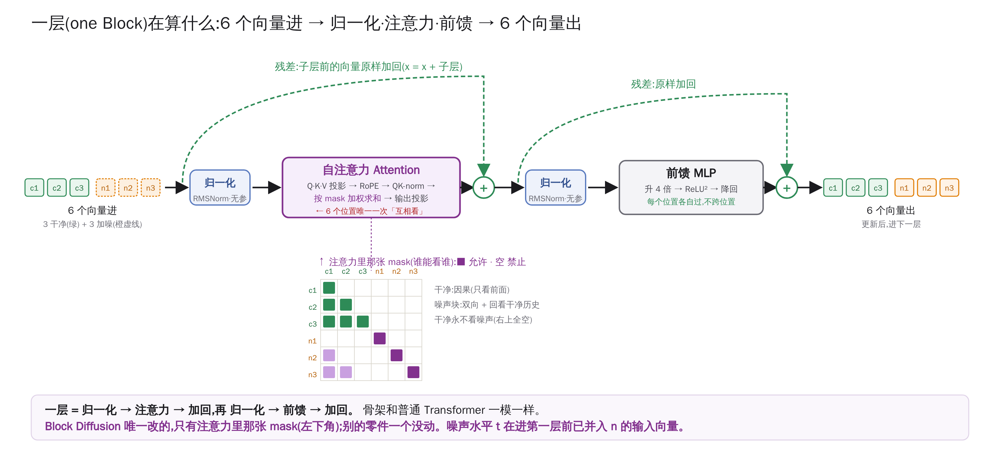
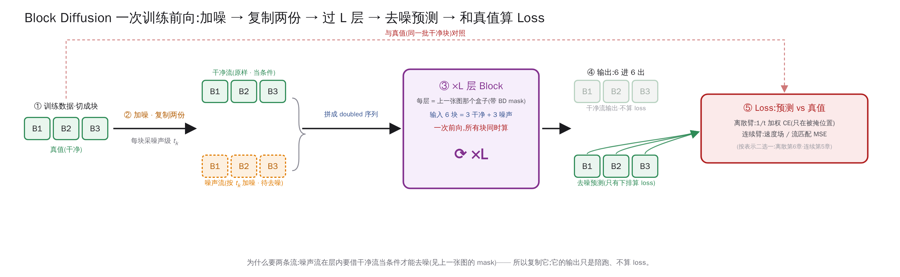
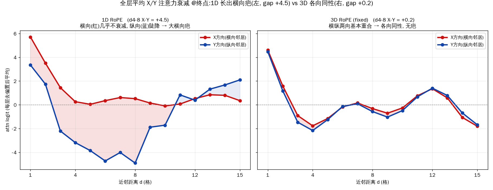
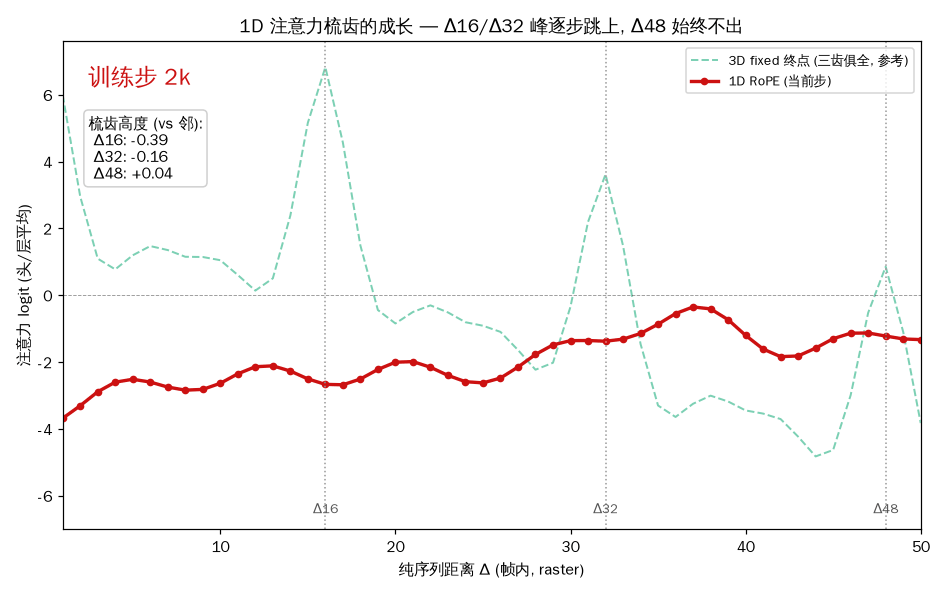

视频世界模型讲义：从 Tokenizer 到 Block Diffusion
第 0 章 总览
0.1 任务定义
我们要构造一个动作条件的视频世界模型（action-conditioned world model）：给定游戏（Doom）过去若干帧画面和玩家的动作序列，模型预测接下来的画面。形式化地，模型学习
$$p(\text{帧}_{n+1..n+k} \mid \text{帧}_{1..n},\ \text{动作}_{1..n+k})$$
它必须支持交互式推理：玩家实时按键，模型实时产出画面——也就是"可以玩的神经网络游戏引擎"。这个任务是文本语言模型的直接推广：把"给定前文预测下一个词"换成"给定历史画面与动作预测下一段画面"，但多了两个新困难——画面不是天然的离散序列（需要 tokenizer），以及实时性约束（推理必须跟上游戏时钟）。
0.2 什么是世界模型
上一节把这件事叫作"文本语言模型的直接推广"。这一节把 "世界模型"这个词本身讲清楚——一个方便的入口，是先看一眼后训练：你们已经学过预训练，后训练就是紧接它的下一步。
先花一分钟说清后训练在做什么。 预训练让模型在海量文本上学"预测下一个词"——那里每个 token 都是预测目标、都要计 loss。后训练紧接着，用对话形式的数据把模型调成一个会对话的助手：一条数据里，一方是 user（发问的人）、一方是 assistant（模型自己的回答）。跟预训练最不一样的一点是——loss 不再加在每个 token 上，而是只加在 assistant 说的话上、不加在 user 说的话上（不计 loss 的那部分，业内叫被 mask 掉——注意这个 mask 跟注意力里那个 mask 不是一回事）。为什么这么分？因为后训练把 user 当成一个有主见的智能体：它要说什么、干什么你控制不了，你只能塑造你自己（assistant）的行为。于是 user 那部分 token 只作条件读进来、不计 loss，训练只调 assistant 自己的输出（模型自己的行为，在强化学习／RL 里叫 policy／策略）。
可很多"与环境交互"的任务，把环境的反馈也塞进了 user 这一栏。 拿一个 computer-use（让 AI 操作电脑）任务举例：AI 每选一个动作，环境（电脑）就把结果——"上一步界面长这样、AI 点了这里、这一步界面变成那样"——借 user 的口吻回给模型。这些本属于环境的反馈，于是也跟着被当条件、mask 掉、不计 loss。（把环境 token 从 loss 里剔掉、只训 AI 自己生成的 token，是当前智能体 RL 的标准做法。）
问题就出在这个"塞"字：它把本该分开的三样东西混成了两样。
- AI——我们在训练的 policy；
- User——一个有主体性（agency；亦译能动性／自主性）的智能体：有自己的意图、会自主行动；
- Environment——没有主体性的客观世界，一个"客体"。
user 和 environment 的分野，正在主体性。user 有主体性，它下一句带着意图——我们未必算得准，也不是我们的优化目标；而 environment 没有主体性，它只是物理规律在走——这种东西我们不但想预测、而且能预测。把它和 user 一起 mask 在"条件"里，等于白扔了一份又可学、又值得学的信号。
世界模型，就是把这份信号捡回来：给环境的反馈也加上预测 loss，让模型去学"环境接下来会怎样"。 一句话——世界模型 = 会预测环境的模型。若一个模型不但预测环境、还同时把 AI 的动作也当预测目标（动作也计 loss），它就兼了一个 policy，近来文献管这叫 World-Action Model（WAM）。
这条"谁计 loss、谁只当条件"的线，正是本讲义反复要走的：第 2 章动作 token 是条件、不计损失，第 4、5 章干净流与定界符也一律归"条件"。所以我们这个 Doom 模型正是一个动作条件世界模型——给定历史画面与动作、预测下一段画面，而不去猜玩家按哪个键（那是 policy、不是 world）；想把它升成 WAM，给动作 token 也加一份 loss 即可。
世界模型有宽窄两层，分界只在"预测的是哪个世界的环境"：
- 广义：预测任何有规律的环境的反馈。computer-use 模型预测"点一下鼠标、界面怎么变"是世界模型；训一个模型预测"给一个数学表达式做一步变形（比如两边同时求导、或把括号展开），结果会变成什么"也是世界模型——它预测的是"数学规则"那个世界的环境反馈。这个意义上，一个纯文本模型也能是世界模型。
- 狭义：预测我们这个真实物理世界。最典型的做法，就是喂它真实视频、让它预测下一帧（带动作条件、因此"可玩"）。本讲义做的就是狭义这一档。
溯源与延伸（可跳过）。 "预测环境动力学"意义上的世界模型是个老概念（常引 Ha & Schmidhuber 2018 的 World Models、LeCun 2022 的 JEPA）；而"把智能体轨迹里的环境反馈当预测目标"是近两年正热的一条线（如 Cameron Wolfe 的 Agentic World Models、Qwen-AgentWorld）。"World-Action Model"一词在文献里另有偏具身控制的窄义，本讲义按上面的定义用它。
0.3 三层栈
整个系统分三层，本讲义按此展开：
| 层 | 职责 | 章节 |
|---|---|---|
| Tokenizer | 像素 ↔ 紧凑表示（离散 token 或连续向量）的双向翻译 | 第 1 章 |
| 序列模型 | 在紧凑表示上学习条件分布；两个范式：自回归（AR）与 Block Diffusion | 第 2–6 章 |
| 推理系统 | 把训练好的模型跑进实时预算 | 第 7 章 |
0.4 记号约定
- 一段 $T$ 帧视频经 tokenizer 得到 $n_{\text{lat}}$ 个 latent 帧（latent frame）；本讲义的 tokenizer 时间压缩率为 4，即 $n_{\text{lat}} = 1 + (T-1)/4$（符号 $t$ 专留给扩散噪声水平，见第 3 章）；
- 每个 latent 帧在空间上是 $16\times16$ 的网格，共 256 个位置；离散 tokenizer 在每个位置放一个 token（整数 id），连续 tokenizer 放一个 16 维实向量；
- 干净数据记作 $x_0$ 或 $x_1$，$x_t$ 表示噪声水平 $t$ 下的数据。用 $x_0$ 还是 $x_1$ 取决于惯例——离散扩散里 $t{=}0$ 最干净（记 $x_0$）、连续里 $t{=}1$ 最干净（记 $x_1$），两套惯例 $t$ 方向相反，对照表见 6.1；
- 块（block）：Block Diffusion 的生成单位；本讲义中一个块 = 一个 latent 帧 = 256 个位置。
第 1 章 视频 Tokenizer
1.1 为什么不直接在像素上建模
两条硬理由。
算力随位置数爆炸。Transformer 的开销由序列位置数决定。一帧 $128\times128$ 像素 = 16384 个位置；过一个空间 8 倍压缩的 tokenizer 后只剩 $16\times16=256$ 个。64 倍的位置差意味着注意力开销数千倍的差距——像素级视频 Transformer 在单卡上排不开。
损失的信噪比。在像素上直接回归，损失的绝大部分预算花在复现高频纹理（墙面噪点、光影抖动）上，而这些细节既难预测又对"世界理解"无贡献。tokenizer 把"感知上无所谓的细节"交给解码器负责，序列模型只需要在紧凑表示里学结构和动态——监督信号的信噪比高得多。这也是业界通行做法：Stable Diffusion、Wan、Cosmos 等模型全部先过 VAE 类编码器，在 latent 空间上建模。
1.2 离散与连续两种 tokenizer
tokenizer 由编码器和解码器组成：编码器把 $T$ 帧压成 $n_{\text{lat}} \times 16 \times 16$ 的 latent 网格（$n_{\text{lat}}$ 见 0.4；此处不写 $t$，$t$ 已留给噪声水平），解码器把 latent 还原成像素。区别在网格的每个位置放什么：
- 连续型（CV, Continuous Video）：每个位置是一个 16 维实向量。信息量上限高，但序列模型必须能处理连续输入（第 5 章）；
- 离散型（DV, Discrete Video）：把连续向量量化到一个有限码本，每个位置变成一个整数 id。序列模型可以像语言模型处理词一样处理它（第 2、5 章）。
FSQ 量化（Finite Scalar Quantization）是我们使用的量化方案：把编码器输出的 $d$ 维向量的每一维独立地圆整到少数几个等级上。例如等级配置 $[8,8,8,6,6]$ 表示前三维各有 8 个取值、后两维各 6 个，码本大小 $8^3 \times 6^2 = 18432$（这是本项目领域 tokenizer 的配置；实验中另借用了通用 Cosmos，码本 64000——不同 tokenizer 的规格见附录 B，别把这些数字混作一个）。FSQ 没有需要学习的码本向量（对比经典的 VQ-VAE：维护一张可学习的码本表、以最近邻查表量化，需应对码本坍缩等训练问题），不会码本坍缩，量化即索引、索引即量化，是双射。
重建天花板。tokenizer 的解码质量给整个系统封顶：序列模型生成得再好，画面质量不会超过"编码后立刻解码"的重建质量。因此评估任何生成结果时，都应与同一 tokenizer 的重建对比，而不是与原始像素对比——否则会把 tokenizer 的失真错记在序列模型头上。实测参考：在我们的数据上，Cosmos DV 重建约 25.5–26.5 dB PSNR（峰值信噪比， 图像保真度指标，越高越好；+3 dB ≈ 误差能量减半），CV 约 27.5–28.4 dB——连续型不量化，天花板天然高约 2 dB。
1.3 因果性：交互式推理对 tokenizer 的特殊要求
交互式世界模型每 4 帧就要编码一次新画面、解码一次生成结果，视频是流式增长的。这对 tokenizer 提出一个静态生成任务没有的要求：
前缀不变性（prefix-invariance）：同样的帧、同样的左侧上下文，编码结果必须相同——无论后面还跟着多少视频。
违反它的后果：同一段历史每次编码得到不同的 token，模型的"记忆"在自己脚下漂移。实现上有两个必须的设计，各对应一类常见违规：
- 时间卷积只向左补齐（left padding）：任何看到未来帧的卷积都会让当前 code 依赖后文；
- 归一化必须逐帧进行：一个跨时间轴的 GroupNorm（视觉网络常用的归一化件：对一组通道×位置统计均值 方差后归一）会让每个 code 依赖整段视频的统计量——这是最隐蔽的违规。通用 tokenizer（如 Cosmos）常在此处不严格：实测约 13% 的 code 会随后缀长度变化而漂移。
1.4 训练一个领域 tokenizer
通用 tokenizer 要伺候全世界的视频；领域 tokenizer 只需伺候一个游戏，可以用更小的码率买更高的保真。我们自己的 Doom tokenizer 的设计要点：
- 几何与通用 tokenizer 完全兼容（时间 /4、空间 /8、code 排布一致），使"换 tokenizer"成为单变量实验；
- 码率：FSQ $[8,8,8,6,6]=18432$ 码 ≈ 14.2 bit/位置，低于 Cosmos 的 64000 码 ≈ 16 bit——领域收窄允许降率；
- 损失设计是运动保真的杠杆：朴素的逐帧 L1 重建损失会给出不错的分数，同时把快速运动糊掉、把单帧事件（枪口火光）吃掉——因为它们在逐帧平均里太便宜。两个针对性成分：
- 帧差损失 $\lambda\,\|\Delta_t \hat{x} - \Delta_t x\|_1$（$\Delta_t$ = 相邻帧之差，$\lambda$ = 该项权重）：直接给"帧间变化"计价，让糊运动变成昂贵的错误；
- 成对判别器（pairs-GAN）：判别器看（前帧, 后帧）对，专门惩罚不合理的时间演化；
- 评测双轨：PSNR 之外必须有事件保真检查（单帧事件是否存活）——这正是逐帧指标的盲区。
结果参考：自己训的领域 tokenizer 与通用 Cosmos 整体相当——并没有一边倒的优势。 它真正换来的、是现成 tokenizer 给不了的一件事：损失函数直接决定下游能"看见"什么 （快速运动、单帧事件正是逐帧指标的盲区）。（一次早期的 AR 世界模型实验里端到端 接入过一次、测得动作响应信号约为 Cosmos 版的 2.3 倍，但该验证止步于 AR 线；后文第 5、6 两章的 Block Diffusion 实验均未使用它，统一用 Cosmos 孪生对，见 5.5 的配置交代）。这一章的 普适结论：tokenizer 不是中立的压缩件，它的损失函数决定了下游模型能"看见"什么。
第 2 章 自回归世界模型（基线范式）
2.1 把世界排成一行：多模态序列布局
世界模型的输入有两种模态：视频 token 和动作 token。我们把它们排进一个共享词表的一条序列里。词表按"带"（band）划分：
[ 文本带 | 控制带 | 视频带（18432 或 64000 个 id） | 动作带（18 个 id） ]
每种 token 的 id 落在自己的带内，模型靠 id 范围与 token-type embedding 区分模态。一条训练行（row）的布局是帧-动作交错（帧 Frame、动作 Action 交替出现，本文简称 FAFA 布局）：
[BOS] [VSTART] L0(256个视频token) a a a a L1(256) a a a a L2(256) ... [VEND]
其中 $L_k$ 是第 $k$ 个 latent 帧的 256 个 token，两个 latent 帧之间夹着 4 个动作 token（tokenizer 时间压缩 4 倍，所以每个 latent 帧对应 4 个像素帧、4 个动作）。这样排布的动机是交互性：推理时驱动程序可以逐块插入玩家刚按下的动作，再让模型生成下一个 latent 帧——动作永远出现在它影响的画面之前。
17 帧窗口（5 个 latent 帧）的一行约 1300 个 token（$2+256+4{\times}(4{+}256)+2$，含首尾定界符）。
2.2 训练：next-token 交叉熵
AR 范式下训练完全沿用语言模型：对每个位置，给定它左侧的全部 token，用交叉熵（CE）预测它自己——实现上即"移一位"惯例：位置 $i$ 的输出头监督目标是位置 $i+1$ 的内容。因果掩码保证位置 $i$ 只能看见 $j
2.3 推理：KV cache 逐 token 采样
生成第 $k$ 个 latent 帧：把该帧对应的 4 个动作 token 追加进序列，然后逐位置采样 256 个视频 token（temperature + top-k），每个 token 一次前向。KV cache 使每次前向只计算新 token：历史位置的 key/value 已缓存。窗口滚满后的处理（滚动/重锚定）属于推理系统，见第 7 章。
2.4 AR 的两个结构性代价
AR 是可靠的基线，但有两个范式内在的代价，与实现优劣无关：
- 串行延迟：一个 latent 帧的 256 个 token 必须逐个采样——256 次前向。这直接顶在实时性约束上（第 7 章将看到量级：约 646 ms/latent 帧，而实时预算是 114 ms）；
- 块内没有联合建模的"反悔"机会：每个 token 一旦采出就固定，块内后采的 token 只能迁就先采的。左上角先采错，右下角只能顺着错。
这两个代价指向同一个方向：能不能把"一个 latent 帧"作为整体来生成？ 这就是 Block Diffusion 的出发点。在进入它之前，第 3 章先自包含地铺垫扩散模型的最小知识。
第 3 章 扩散基础（最小自包含集）
3.1 关键区分：训练一步，推理多步
扩散模型最常见的困惑是混淆训练与推理的计算形态。
训练是单步的（每个样本一次前向）：取干净样本 → 随机抽一个噪声水平 → 按噪声水平把样本和噪声混合 → 网络看混合结果，预测"缺失的信息" → 回归损失， 反传，完。训练时从不运行完整的去噪链；不同训练步各自随机抽噪声水平， 合起来覆盖所有档位——模型学的是一张"在任意噪声水平下该往哪儿走"的地图。
推理是多步的：从纯噪声出发，反复"问网络 → 按答案挪一步"，走到干净端。 步数是推理端自由选择的旋钮（后文的 $K$），与训练完全解耦。
3.2 Setup：对象、混合、网络、两个循环
先把登场角色摆全（以我们采用的最简形式为例）：
- 干净样本 $x_1$：一个（或一组）实向量——在本讲义里就是 latent 帧的 16 维向量们；
- 噪声 $\epsilon \sim \mathcal{N}(0, I)$：与 $x_1$ 同形状的高斯噪声；
- 噪声水平 $t \in [0,1]$：本讲义约定 $t=0$ 纯噪声、$t=1$ 干净；
- 混合点 $x_t$：把样本和噪声按水平 $t$ 线性混合——
$$x_t = (1-t)\,\epsilon + t\,x_1$$
$x_t$ 沿一条直线从噪声滑向数据。网络的接口：输入 $(x_t,\ t)$，输出 一个与 $x_t$ 同形状的向量；本讲义让它预测这条直线的速度（即 $x_t$ 对 $t$ 的变化率 $\mathrm{d}x_t/\mathrm{d}t$——把 $x_t=(1-t)\epsilon+t\,x_1$ 对 $t$ 求导，正好是常向量 $x_1-\epsilon$，这就是下面回归的目标）：
$$v_\theta(x_t, t) \approx x_1 - \epsilon,\qquad \mathcal{L} = \|v_\theta(x_t,t) - (x_1-\epsilon)\|^2$$
防误读锚点：直线匀速，速度是常数 $x_1-\epsilon$——等价写法 $(x_1-x_t)/(1-t)$，"从当前点指向终点、除以剩余时间"；分母是 $1-t$ 而不是 $t$（除以 $t$ 在起点发散，直觉即错）。
两个循环（全部是算术）：
训练（每样本一次前向）: 推理:
x1 ← 数据集抽样 x ← 纯噪声
ε ← 高斯噪声; t ← U[0,1] for k = 0 .. K-1:
x_t ← (1-t)ε + t·x1 v ← 网络(x, t = k/K) # 在当前水平问
loss ← ‖网络(x_t,t) − (x1−ε)‖² x ← x + v/K # k=0 即 t=0
推理循环里网络被反复询问——每挪一步位置变了，方向要重新估计（为什么必须 如此，3.4 节专门回答）。文献把这种"沿一个随位置变化的方向场小步累加"的 循环叫欧拉法 / ODE 积分——读论文时对上号即可，名字之下的机制就是这四行。
3.3 同一个 setup 的三个自由旋钮
上面的 setup 里其实有三处选择是相互独立的自由度；把它们摆成旋钮， 文献里的各路方法名就只是格子的组合：
| 旋钮 | 我们的选择（3.2） | 另一个选项 |
|---|---|---|
| ① 预测目标 | 速度 $v=x_1-\epsilon$ | $\epsilon$ 或 $x_1$——已知 $(x_t,t)$ 时三者线性互换，区别只在数值稳定性与损失的隐式加权（调参级） |
| ② 路径（混合公式） | 直线 $(1-t, t)$，无参数可调 | 弯线：$x_t=\sqrt{\bar\alpha_t}x_1+\sqrt{1-\bar\alpha_t}\epsilon$，混合系数由一张需人工设计的"噪声日程表"（schedule，$\bar\alpha_t$）给出 |
| ③ 循环 | 不回噪：确定性走，随机性只在起点 | 回噪：每步去掉一点噪声后、再注回一点更小的新噪声——随机性摊在整条链上 |
步数不是和①②③并列的第四个分类旋钮：它可调，但不参与给方法命名。它的可行范围由 ②③ 决定：回噪循环的单步更新公式靠"步子很小" 的近似推导，步数被钉死在几百到一千；不回噪循环的步长只受"方向沿途变化多快" 限制——路径越直、方向变化越小、需要重新问网络的次数越少，直线路径少步即健康（文献典型 5–20 步；本项目 $K{=}8$）。
对号入座：
| 组合 | 文献名 |
|---|---|
| ($\epsilon$, 弯, 回噪) | DDPM（2020，奠基之作） |
| ($\epsilon$, 弯, 不回噪) | DDIM / DPM-Solver——同一个训好的网络只换循环，步数千级降到几十；①③ 相互独立的最好实证 |
| ($v$, 直, 不回噪) | rectified flow / flow matching（= 3.2 的 setup；少步数场景业界的收敛答案，口语"flow matching"常直接指这一格） |
| ($v$, 直, 回噪) | FM 的随机采样器（存在；步数充裕时画质略好） |
从业者黑话解码：当有人说"我们不用 diffusion、我们用 flow matching"， 其宣称的是 ②③ 两个旋钮的选择——无日程表的直线路径 + 少步确定性推理（对 实时控制类应用是硬需求），而不是 ①；数学上同族，工程上是两代技术栈的牌子。
3.4 为什么推理必须多步：一步减不掉的不是噪声，是不确定性
训练时加噪是纯算术，那推理为什么不能"一步把噪声减掉"？因为推理从纯噪声 出发——当初加的那个 $\epsilon$ 并不存在，不存在"还原"，只存在"创造"。
网络在噪声点上输出的是条件期望 $E[x_1-\epsilon\mid x_t]$：所有与当前 噪声点相容的可能画面的平均方向。这与 3.2 的"速度是常数"并不矛盾：常数 说的是单个训练样本对沿它自己那条直线的目标；但模型不知道你落在哪条线上，它 学到的是把所有经过这一点的直线平均起来的场——一平均，方向就随位置而变了。训练喂的是 常数目标、学出来的却是弯的场，这正是"回归条件期望"的必然结果。
思想实验：数据集一半画面红盒子在左、一半在右。从纯噪声一步跳到底 = 跳到 两种画面的均值 = 两个半透明盒子的糊图。一步生成 = 条件均值 = 糊。 多步的作用：走一小步后，位置偏向某一片可能性，在新位置重新问网络，方向 就更新了——可能集合逐步收窄，方向从"指向均值"收敛到"指向具体某张画面"。 多步不是仪式，是"方向需要沿途重新估计"这个事实的代价；路径越直，方向变化 越少，代价越小——这就是 3.3 里"直线允许少步"的机制。
（离散臂在 $K{=}1$ 时也会发糊，与此同根不同症——但那要等 6.7 有了离散扩散的语境才好讲，这里先搁下。）
3.5 为什么扩散能"整块"生成
AR 逐 token 生成时，块内后位置只能迁就先位置。扩散在每个去噪步对全部 位置同时给出预测，位置之间通过块内双向注意力互相协商，多步迭代逐步收敛 到联合合理的结果。代价是每步一次前向、共 $K$ 步——但 $K$（本项目默认 8、可用 2–16 换挡）远小于 逐 token 的 256 次，且每步是并行的。这就是"块内联合建模 + 并行生成"的来源， 也是下一章把它嫁接进块结构的资本。
第 4 章 Block Diffusion 框架
4.1 核心思想
文本的 AR 与图像的扩散看似两个世界，Block Diffusion（BD3-LM，ICLR 2025）给出统一：把序列切成块，块与块之间自回归，每个块内部用扩散生成。
块大小是一个插值旋钮：块=1 个 token 时退化为纯 AR；块=整个序列时退化为纯扩散。视频世界模型落在中间的甜点上：一个块 = 一个 latent 帧——帧间因果（时间有箭头），帧内联合（空间无箭头）。这恰好匹配视频的物理结构。
4.2 训练机制：doubling trick
难点：训练时既要让每个块以"干净的历史块"为条件（像 AR），又要让块内做掩码扩散（需要同一块的加噪版本）。不复制就得跑两次前向：同一个位置没法既呈现干净内容（供后面的块当条件）又呈现加噪内容（供本块去噪）——一份输入装不下两个角色。BD3-LM 的解法是把序列复制成两份拼接，把两次前向并成一次：
$$[\underbrace{c_1, c_2, \ldots, c_N}_{\text{干净流}} \mid \underbrace{n_1, n_2, \ldots, n_N}_{\text{噪声流}}]\qquad(N=\text{块数})$$
$c_k$ 是块 $k$ 的干净版本，$n_k$ 是同一块的加噪版本（加噪算子因表示而异：离散 = 按该块 $t_k$ 随机掩码（6.1），连续 = 3.2 的直线插值——对照表见 5.1；本章以离散为例）。 注意两流的排列顺序是约定问题——原论文写作 [噪声流|干净流]，本项目实现为 [干净流|噪声流]，机制完全等价（下述 mask 与位置设计对顺序不敏感）。（记号提醒：本节画 mask 以块为单位、用 $N$=块数；4.3 讲位置编码时会切到按 token 计、另用符号 $L$=一行的 token 数，两个符号各管一层，不冲突。）
注意力 mask 是全部机制所在（"能看谁"规则）：
| 查询 | 允许看 | 语义 |
|---|---|---|
| $c_k$ | $c_{| 干净流就是一次标准 AR 前向 |
|
| $n_k$ | 块内全部 $n_k$ 位置（双向） | 块内联合去噪 |
| $n_k$ | 严格早于块 $k$ 起点的干净流位置 | 以干净历史为条件 |
以及两条禁令：
- $n_k$ 不得看 $c_k$——同一块的干净版就是答案，看见即泄漏；
- $n_k$ 不得看任何其他噪声块 $n_{j\neq k}$（无论 $j
把规则画成 $N=3$ 块时的注意力网格（行 = 查询，列 = 被看者；■ = 允许，· = 禁止）：
c1 c2 c3 n1 n2 n3
c1 ■ · · · · ·
c2 ■ ■ · · · ·
c3 ■ ■ ■ · · ·
n1 · · · ■ · ·
n2 ■ · · · ■ ·
n3 ■ ■ · · · ■
左上象限 = 干净流的标准因果三角；右下对角线 = 各噪声块内部的双向注意力（块内为满块，块间为空）；左下 = 噪声块看干净历史（$n_k$ 那一行恰好比 $c_k$ 少看一格：不含 $c_k$ 自己）；右上全空 = 干净流永远不看噪声流。读者可以逐格对照上面的规则表与两条禁令验证一致性。（注意每格代表一整个块：$n_k{\to}n_k$ 的那个 ■ 就浓缩了块内 256 个 token 之间的双向注意力——它的 token 级展开要到 6.5 的网格才看得见。）
这张 mask 摆进一整层里是什么位置。 容易只盯着 mask、忘了它只是"一层"里的一个零件。把一层的计算流从头到尾摆出来（下图，以 6 个向量 $c_1c_2c_3\,n_1n_2n_3$ 为例）：一层就是两次"归一化 → 子层 → 残差加回"——先 x = x + 注意力(归一化(x))、再 x = x + 前馈(归一化(x))（本项目用无参 RMSNorm、pre-norm、ReLU² 前馈）。这套骨架和普通 Transformer逐件相同；唯一让不同位置互相影响的,只有注意力里"按 mask 加权求和"那一步，归一化与前馈都是每个位置各算各的、不跨位置。于是一句话收口:Block Diffusion 相对普通 Transformer 只改了一处——注意力里那张"谁能看谁"的 mask（就是上面那张网格,已缩略在下图左下）;别的零件一个没动。（噪声水平 $t_k$ 在进第一层前已并入噪声位置的输入向量,见 5.2,层内不再单独处理。）

把这一层叠成一次完整的训练前向。 上图是"一层"，把它打包成一个盒子、堆 $L$ 层，就得到一次训练前向的全貌（下图）：① 取一段干净的块序列（它同时就是真值）；② 加噪并复制两份——每块采一个自己的噪声级 $t_k$，一份保持干净（当条件）、一份按 $t_k$ 加噪（待去噪），拼成那条 doubled 序列（6 块 = 3 干净 + 3 噪声）；③ 过 $L$ 层 Block（每层就是上图那个盒子，带 BD mask），一次前向、所有块同时算；④ 输出仍是 6 个，前三个（干净流输出）只是陪跑、不算损失，后三个是去噪预测；⑤ 只拿这后三个和真值算 Loss（离散臂 $1/t$ 加权 CE、只在被掩位置；连续臂速度场 / 流匹配 MSE，按表示二选一——离散见第 6 章、连续见第 5 章）。"为什么非要复制一份干净流"在这张图里也一目了然：噪声流在层内要借干净流当条件才去得了噪（就是上图那张 mask），所以把它复制进来一起过网络；它的输出不产生损失，只作条件。

4.3 Position reset：与 AR 的结构同一性
双流序列共 $2L$ 个 token（每流 $L$ 个，$L$=一行的 token 数），位置编码怎么给？正确设计（原论文与 ACDiT——块间 AR × 块内连续扩散的先行工作，5.3 节详述——源码一致）：两流共用同一组 RoPE 位置 $0,1,\ldots,L-1$——位置"重置"而非顺延。
理由：$c_i$ 与 $n_i$ 是同一段数据的两个版本，理应占据同一位置。这样 $n_i$ 看 $c_j$ 的相对距离是 $i-j$——与标准 AR 中位置 $i$ 看位置 $j$ 完全相同。若顺延编码（$0..2L-1$），所有跨流距离会错开 $L$，摧毁 $c_i \leftrightarrow n_i$ 的对应。
粒度澄清：位置 $0..L-1$ 是按 token 计的（一行 $L\approx1300$ 个 token 就有 $L$ 个不同的 RoPE 位置）；4.2 节的块数 $N$ 只是画 mask 时的单位。因此一个块内的 256 个 token 各有各的 RoPE 位置（块内按 16×16 网格的行优先光栅顺序排成连续 256 个位置），块内空间结构由这段一维 位置编码承载；"reset"只发生在流与流之间：噪声流的第 $i$ 个 token 与干净流的 第 $i$ 个 token 共用同一个位置。
这个设计有一个深刻推论：doubling trick 不是一个异于 AR 的架构。位置结构与 AR 完全一致，区分两流的只有注意力 mask。噪声流因此像 AR 的一块"草稿区"：占用与干净流完全相同的位置，只是在那上面做去噪。实现上也因此极轻：只需把 RoPE 的 cos/sin 表换成 $[0..L{-}1,\ 0..L{-}1]$ 的排列，Transformer 本体一行不改；且该表的前 $L$ 行就是恒等排列，单流推理可以原样使用同一个模型。
4.4 AR 极限与梯度方差
理论上块=1 时 BD 应等价于 AR，实测（BD3-LM 论文，LM1B）却有差距：AR 困惑度 22.88，块=1 的 BD 25.56。差距不来自"看的 token 少"（对照实验：标准 AR 每步随机丢一半 token 训练，困惑度仍是 22.88——与全量 AR 恰好相同，这个数值重合不是笔误，正是论文的论点：少看一半 token 不伤 AR），而来自掩码随机性与扩散目标的梯度估计的相互作用。把掩码概率固定为 1（永远全掩）后，目标严格退化为 AR（块=1 且必被掩，每个位置只能靠干净历史预测自己，就是 next-token），困惑度恢复 22.88——证明框架的 AR 极限在机制上是精确的，差距纯属梯度方差问题。全掩技巧只适用于块=1；块增大时方差问题依然是该框架的开放性挑战（$t$ 裁剪是工程上的缓解）。
第 5 章 实例化 I：连续 Block Diffusion
5.1 动机与表示替换
第 4 章的框架（块间 AR + 块内扩散 + doubling trick + mask 四规则 + position reset）是表示无关的骨架；本章给它第一个实例化——把块内那一层直接换成第 3 章的直线扩散（流匹配）：每个视频位置放一个 16 维连续向量、预测速度场 $x_1-\epsilon$。外层全部原样保留，这正是框架"表示无关"的意思。为什么先做连续？第 1 章说过连续 tokenizer 的重建天花板比离散高一截，且业界画质主线（Stable Diffusion 系、Cosmos 扩散线）均为连续 latent + 扩散。下表把连续版的六个零件列清（离散版见第 6 章，换的也只是块内这一层）：
| 部件 | 离散版（第 6 章） | 连续版（本章） |
|---|---|---|
| 每位置的表示 | 1 个 token id | 16 维实向量 |
| 加噪算子 | 以 $p=t_k$ 掩码为 [MASK] |
$x_t=(1-t_k)\epsilon + t_k x_1$（整块全体位置） |
| 预测目标 | 被掩位置的原 token（分类） | 速度场 $x_1-\epsilon$（回归） |
| 损失 | $1/t$ 加权掩码 CE | MSE（均匀权重） |
| 推理一步 | 置信度揭掩一批 | 欧拉积分一步 $x \mathrel{+}= v/K$ |
| 输入/输出接口 | embedding 查表 / 词表分类头 | 线性投影进 / 线性投影出 |
注意一个不对称：离散版每块只有部分位置被掩，连续版整块所有位置都处于同一噪声水平 $t_k$——高斯噪声没有"部分位置干净"的自然版本。
5.2 三个实现细节
- 接口适配：视频位置的 embedding 由"查表"替换为 $\text{in\_proj}(x_t)$（16→模型维的线性层）；输出侧在视频块位置接一个速度头 $\text{v\_head}$（模型维→16 的线性层）。序列的脚手架（动作、定界符）仍是离散 token 走原查表——一条序列中两种输入方式共存；
- 噪声水平的注入：模型必须知道当前块的 $t_k$。做法：把 $t_k$ 经正弦特征（同 Transformer 经典位置编码的 sin/cos 多频展开）+ 两层 MLP 变成一个向量，加在噪声块位置的输入 embedding 上；干净流与条件位置不加。（对照：图像扩散界的标准做法是 adaLN——adaptive LayerNorm，让 $t$ 通过一个小网络去调制 Transformer 每一层归一化的缩放和偏移，等于把噪声水平注入每层；表达力强，但要改 Transformer 本体。加性注入只碰输入端、不动本体，代价是条件信号弱一些。）；
- latent 归一化：噪声 $\epsilon$ 是单位方差的，所以数据也必须是。思想实验： 若数据 scale 是 100，插值 $x_t=(1-t)\epsilon+t\,x_1$ 在极小的 $t$ 处就被数据 淹没——有效噪声日程整体塌向"几乎干净"那一端，模型几乎见不到真正的高噪状态， 训练失效。实测 CV latent 各通道方差 0.4–0.8 且不均，故按训练集统计量逐通道 标准化后再进扩散、解码前反标准化（Stable Diffusion 著名的 scale factor 0.18215 就是同一件事：把 VAE latent 拉到近单位方差）。
5.3 与 ACDiT 的对照
ACDiT（清华，2024）是"块间 AR × 块内连续扩散"的先行工作（图像/视频）。我们的实例化与它同族但三处不同：
| 维度 | ACDiT | 本项目 |
|---|---|---|
| 块内目标 | DDPM 噪声预测 $\hat\epsilon$ | rectified flow 速度预测 |
| 噪声水平采样 | 全序列共享一个 $t$ | 每块独立 $t_k$（沿用 BD3-LM） |
| $t$ 的注入 | adaLN（改本体） | 加性 embedding（零改本体） |
其中"共享 vs 独立 $t$"是一个尚未对照实验的真实自由度。两边的论据：独立 $t_k$ 让一次前向同时覆盖多种噪声水平的组合，样本效率高；而共享 $t$ 更贴近推理——推理时任一时刻只有一个块在被去噪（历史块全干净、未来块不存在），整条序列只有一个有效噪声水平，"多个块处于不同噪声水平"这种训练态在推理时从不出现。独立 $t_k$ 因此存在训练-推理分布错配的隐忧，共享 $t$ 则付出覆盖效率。孰轻孰重，无人测过。
5.4 跨表示评测：度量不可比问题
离散版的损失是 CE（nats/token），连续版是 MSE（归一化 latent 单位）——量纲不同，数值不可比，连"单向规则"（6.2）都不适用。跨表示比较只能用表示无关的裁判：
- 目视判读（最终裁判）；
- rollout PSNR，各对各的天花板（rollout = 给定起始帧与动作序列、让模型 自己逐块生成整个窗口的"放手跑"，区别于每步都喂真值的 teacher forcing）：每臂的生成结果与自己 tokenizer 的重建对比（1.2 的原则）——连续臂天花板高 2 dB，若共用一条 GT 基准，连续臂会白赚 decoder 的分；
- 动作响应等行为指标。
5.5 实测结论
先交代 tokenizer 配置以排除一个合理怀疑：第 5、6 两章的对比中，离散臂用 借用的 Cosmos DV、连续臂用借用的 Cosmos CV——同一家族的一对孪生（同架构、 同压缩几何、同训练数据，仅差最后是否量化），1.2 节的"连续天花板高约 2 dB" 正是对这一对测的。1.4 节的领域 FSQ tokenizer 虽已单独验证（重建与 Cosmos 整体相当），但尚未 部署进本章的任何实验，且它只有离散版、没有连续版——所以本节的对比是干净的 "离散 vs 连续表示"，没有混入"领域 vs 通用 tokenizer"的差异。在此前提下， 同数据、同模型尺寸（0.23B）、同训练预算（150k 步）、同 $K=8$：
- 画质：rollout PSNR 各有胜负（4 条测试 clip 2:2），目视判读两臂相当；
- 学习效率：连续臂 30k 步的 rollout 质量即与离散臂 150k 步大体打平——回归 16 维向量的监督信号密度远高于 64000 类分类；
- 采样速度：朴素采样器下连续臂约快 2.6×——欧拉积分一步是纯张量运算，没有离散版的 top-k、多项式采样与逐步的 GPU↔CPU 同步。
结论的谨慎表述：在此设定下，连续表示以更低的训练与推理成本达到相当的画质。这与业界"画质主线用连续扩散"的选择一致。
第 6 章 实例化 II：离散 Block Diffusion 世界模型
6.1 吸收态掩码扩散：离散的加噪算子
对离散 token，高斯噪声没有意义，换一个加噪算子：以概率 $t$ 把 token 替换成
特殊的 [MASK]；$t=0$ 什么都不遮，$t=1$ 全遮。网络在每个被遮位置预测原
token——交叉熵分类。"去噪" = 逐步把 [MASK] 换回具体 token。训练哲学与
连续版完全一致（随机噪声水平、单步监督、推理端自选步数），只是加噪算子和
预测目标换了。
⚠ 记号警告：两个文献惯例里 $t$ 的方向相反。 掩码扩散的 $t$ = 遮盖 概率（$t=1$ 最噪），rectified flow 的 $t$ = 干净度（$t=1$ 最干净）。本讲义 尊重各自文献的原始惯例，读者在两种语境间切换（尤其第 5、6 章都出现 "每块的 $t_k$"）时须带着这张对照表：
离散（掩码扩散） 连续（rectified flow） $t=0$ 全干净 纯噪声 $t=1$ 全遮盖 全干净 损失权重 $1/t$（见 6.2，需 $t_{\min}$ 裁剪防爆炸） 均匀（无 $1/t$，也不需裁剪；$1/t$ 是离散侧特有的归一化项，来由见 6.2）
6.2 训练目标与 NELBO
每块独立采噪声水平 $t_k \sim U[t_{\min}, 1]$，块内每个 token 以概率 $t_k$ 被替换为 [MASK]。损失只在被掩位置计算（下式 $x_0^{(i)}$ = 位置 $i$ 的干净原始 token——离散惯例
$t{=}0$ 全干净，见 6.1 的方向对照表）：
$$\mathcal{L} = -\sum_{k} \mathbb{E}_{t_k}\Big[\frac{1}{t_k}\sum_{i \,\in\, \text{块}k\text{ 的被掩位置}} \log p_\theta(x_0^{(i)} \mid x_{t_k},\ c_{ 三个要点： NELBO 与 AR 损失的可比性——单向规则。上式的期望是负对数似然（NLL）的一个上界（负 ELBO）。评估时我们在固定 $t$ 网格 $\{0.3,0.5,0.7,0.9\}$ 上算掩码 CE 取平均，得到确定性的 NELBO 估计，单位与 AR 的 CE 相同（nats/token）。但比较是单向的： BD 的 NELBO 低于 AR 的 CE ⇒ BD 的真实似然确实更好；
BD 的 NELBO 高于 AR 的 CE ⇒ 无结论（可能模型差，也可能只是上界松）。 跨范式的最终裁判必须是似然之外的证据：目视判读、rollout 保真度、动作响应等。 生成是单流的（无 doubling——那只是训练技巧）： $K$ 是纯推理旋钮（见 3.1 的训练/推理解耦）：$K=1$ 即一轮全定——块内位置条件独立采样，没有任何协商；$K$ 越大块内联合建模越充分。KV cache 与 BD 天然相容：块间依赖是因果的，与 AR 的缓存逻辑完全相同——这是 BD 相对全序列扩散的重要工程优势。 把第 4 章框架套到第 2 章的 FAFA 布局上，出现一个论文未覆盖的结构：我们的序列不是纯视频块的排列，块与块之间还有动作 token、序列两端还有定界符： （加粗的 $L_k$ 是扩散块，各 256 token；夹在块之间的动作组 aaaa 和所有定界符
都是条件——动作组不属于任何块。） 处理规则自然延伸：动作与定界符这些非视频位置，连同首个 latent 帧 L0，一律归入"条件"——不加噪、不计损失、在两流中都保持因果可见。注意 L0 本身是货真价实的视频 token（属于视频带、查视频词表），把它归入条件是角色上的决定而非类型上的：交互式生成任务的定义就是"给定当前画面，接着生成"，L0 是任务的输入而非目标；同时块间条件链需要一个永远干净的首块作锚（块 1 的条件 = L0 + 动作），训练形态与推理形态由此一致。（对照：第 2 章的 AR 训练对 L0 位置照常计损失——AR 不需要这个锚的概念，首帧算不算目标无关紧要；BD 里这是结构性选择。）于是这条序列同时容纳两种粒度：动作 token 以"块大小=1、永远干净"的方式活在外层 AR 里，视频块以"块大小=256"的方式做块内扩散。 这值得强调，因为它是"变块结构"（一条序列中 AR 小块与扩散大块共存，靠 mask 区分——Block Diffusion 框架结构上支持、但此前无公开工作运行过的形态）的一个已运行实例：我们的动作 token 就是退化的 AR 块（纯条件、无损失）。从这里到"文本 AR 块 + 图像扩散块同序列"只差给小块加上 AR 损失。 混合粒度给 4.2 的 mask 表增加一条：噪声流中的条件位置（动作等）走标准因果——它们在噪声流里只是陪跑（输出无用），但必须存在以保持两流位置对齐（position reset 要求两流逐位对应）。完整的四规则： 按 4.2 的画法把网格扩展到含动作的最小例子（段：$L_0$=条件帧, $a_1,a_2$=动作组,
$L_1,L_2$=扩散块;带撇 = 噪声流;每个 $L$ 格代表 256 个 token——对角线上的
$L'_k{\to}L'_k$ 格内部是全双向,$a$ 格内部是因果）： $L'_1$ 行与 $L'_2$ 行是全网格的灵魂：各自比干净流同名行恰好少看自己那一格
（答案），换来右侧对角线上的块内双向格（联合去噪）。 mask 写错的代价是静默的：泄漏（$n_k$ 看见 $c_k$）不会报错，只会让训练损失好得虚假、生成一塌糊涂。读代码检查 mask 不可靠——需要行为级验证。通用方法是置换实验： 扰动输入的某一部分，断言哪些位置的输出必须变、哪些必须严格不变。 对上述 mask 的两个关键断言： 一个实操陷阱：以随机初始化的模型做此测试时，须先确认模型存在跨位置的信息流（某些初始化方案把残差投影初始化为零，此时任何 mask 都"通过"测试——测试本身失明）。 $K$ 的画质-速度换挡（实测于本项目模型）： 本节是全篇最深的一节，目标不止"讲清 3D RoPE"，而是借这个案例把 RoPE 到底是什么吃透——配套代码也会发给你们，亲手玩这套探针是作业之一。 先把 RoPE 是什么钉死（后面全靠这三句）。 RoPE 给每个 token 编码位置的办法，是把它的 query/key 向量按位置转一个角度——转多少 $=$ 频率 $\times$ 位置。妙就妙在：两个 token 算注意力时，转过之后的点积只跟它俩的相对距离有关（一起平移，夹角不变）。所以 RoPE 的本事是平移等变——"隔多远"被编码进去、"在哪儿"被约掉。一个 head 里有好几组通道，各转各的频率：低频通道转得慢、波长长，管粗距离；高频通道转得快、波长短，管细距离。而 问题：一维光栅打乱了二维几何。 4.3 把块内 256 个 token 按 $16\times16$ 网格的行优先光栅排成连续的一维 RoPE 位置。这对 Transformer 是能跑的，但它把视频真实的时空结构打乱了。同一个空间格子的三种邻居，在这套一维位置里的距离是： 而视频预测任务的本质是"大体照抄上一帧 + 局部运动"：同一格子跨时间强相关（时间轴平移），空间上各方向近邻大体等价（局部各向同性）。一维光栅把这套几何碾平了——上下邻居被拉到 16 倍远，跨帧同格被拉到 260 倍远，左右邻居却近在咫尺。模型要嘛从数据里把这套固定的错位背下来，要嘛干脆学不到。 设计：给每个 token 真实的 $(t,y,x)$ 坐标。 RoPE 的旋转频率本可以沿多个坐标轴分别施加。把每头的 $\text{head\_dim}=64$（即 32 个旋转对）分带给三个轴，例如 $(t,y,x)=(16,8,8)$： （顺带澄清一个撞名：这里的时间坐标沿用视频惯例记作 $t$，指的是帧的位置，跟第 3–4 章那个 $[0,1]$ 的噪声水平 $t$ 毫无关系，只是共用了字母。）于是"同格跨时间"= 纯时间轴平移，"空间近邻"= 小的 $(y,x)$ 距离——真实几何直接交给模型，不用它从数据里反推。 每轴的 base 必须重调。 承接上面第 ③ 句——base 圈定"多大范围内的距离编得出来"。标准 base $=10000$ 是给几千长的一维序列定的；可我们每根轴的坐标范围都极小（空间 $0\!-\!15$、时间 $0\!-\!16$）。base 一大，大半通道的波长远超这点范围、在范围内几乎不转 $=$ 白占通道、编不出位置（实测标准 base 下只有约 $3/8$ 的空间通道、$5/16$ 的时间通道真在干活）。所以要把 base 调小，让每轴最低频通道的波长 $\approx$ 该轴范围的两倍（转半圈、不混叠、所有通道都落进范围里），即 $$\text{base}_{\text{axis}} = \left(\frac{2R_{\text{axis}}}{2\pi}\right)^{n/(n-1)}$$ 但关键的一步是：base 不照当前窗口定，而照"可预见的最大窗口"定、然后冻死。 若照当前这个 $16\times16$/17f 窗口套公式，两轴的 base 都只有个位数（约 6）——我们没用它。我们按约 512px（约 65 格一边）算出空间 base $\approx 32$、按约 1000 帧算出时间 base $\approx 500$，取成固定常数、不随窗口变。为什么超配？为了热启——一个 17f 模型要能干净地续训到 129f、再到更长，中途 RoPE 的位置几何决不能变；若每换一次窗口就照当前范围重调 base，几何一改、热启就废了。超配一次、全程通用，代价只是当前窗口下有些高频通道暂时没吃满。（代入验一下：$(2{\times}65/2\pi)^{8/7}\approx32$、$(2{\times}1000/2\pi)^{16/15}\approx500$，对得上；而拿当前 $R{=}15$ 代进去得 $\approx6$，那正是"照当前调"的答案，不是我们要的。） 与 4.3 的 mirror 正交组合。 3D RoPE 只是把 cos/sin 表从"一维位置"换成"$(t,y,x)$ 坐标"；4.3 的 position reset 照旧——先按坐标建好一行的表，再用 $[0..L{-}1,\ 0..L{-}1]$ 的排列镜像成两流。于是干净流与噪声流在相同位置共享同一 $(t,y,x)$：同一格子的干净版与噪声版坐标完全一致，"噪声块看干净历史"的相对几何与单流推理严丝合缝（4.3 的推论原样成立）。 为什么 3D RoPE 到了 Block Diffusion 才有用武之地。 先回到 RoPE 靠什么帮忙：它让注意力只看相对位置，于是"同一个局部套路"在哪儿都能复用——但前提是任务本身真有那种平移对称。AR 和 Block Diffusion 处理一帧的方式不同，能对上的对称也就不同。 硬把 3D 坐标塞给 AR 会怎样？它"前进一格"在真实 $(t,y,x)$ 里是这么走的：多数时候 $x{+}1$（向右挪一格），可一到行尾就折返（$x$ 从 15 跳回 0、$y$ 加 1，像屏幕左边一条竖边突然甩到右边），帧与帧之间还会插进一个动作 token（坐标 $(t{+}0.5,0,0)$）。也就是说，AR 的"前进一格"在 3D 坐标里根本不是一个干净的平移，一路带着折返和跳变。RoPE 的看家本领是平移等变，这里却没有干净的平移供它对齐——结构先验使不上劲。 ——但这只是"理论上别扭"，不是量出来的。 我们没像下面扒 Block Diffusion 那样精确看过 AR 的注意力；3D 在 AR 早期未必一点忙帮不上，模型也完全可能把这点折返硬背下来（这种可能其实不小）。能确定的只有一条链：既然从 1D 换到 3D 在最该见效的 Block Diffusion 里都没掀起多大波澜（下面就看这个），那在结构本就别扭的 AR 里看不到好处，便不足为奇。一句话收口：块内双向把一帧还原成二维整体，空间平移这才成为任务真正的对称，3D RoPE 第一次有了对齐的对象；AR 把帧压成一维因果流，对齐的是序列平移——那本就是 1D RoPE 的主场。 审问模型：把 RoPE 学到的几何直接读出来。 前面都是"应该怎样"。可模型到底学没学到二维几何——不用猜，扒它的注意力就行。取一个 query 码，量它对横邻居（$\Delta y=0,\Delta x=1$：空间距离 1、一维距离 1）与竖邻居（$\Delta y=1,\Delta x=0$：空间距离 1、一维距离 16）各给多少注意力（这里"注意力"指 softmax 之前的 $q\cdot k/\sqrt{d}$ 相容性打分，对所有头、所有同偏移的位置对平均；不是 LM head 对词表的输出 logit）。两个邻居空间距离相同、一维距离差 16 倍，于是有个干净的判据：若模型按真实二维几何组织，横竖应对称；若按一维序列距离组织，横 $\gg$ 竖。 下面一步步问下去。 问题一：模型把横邻居和竖邻居一视同仁吗？ 把注意力打分按邻居距离画出来、对全部 12 层平均： 
6.3 推理：逐块生成与 K 步揭掩
[MASK]；
6.4 混合粒度序列：动作 token 进入外层 AR
序列段
[BOS] [VSTART]
L0
aaaa
L1
aaaa
L2
aaaa
L3
aaaa
L4
[VEND]
角色
条件
条件
条件
块1
条件
块2
条件
块3
条件
块4
条件
6.5 Mask 的第四规则
#
查询（流, 类型）
允许看
1
干净流, 任意
干净流内因果
2
噪声流, 视频块 $k$
干净流中严格早于块 $k$ 起点的位置（含动作）
3
噪声流, 视频块 $k$
噪声流中块 $k$ 自身（双向）
4
噪声流, 条件位置
看干净流，因果（镜像陪跑）
L0 a1 L1 a2 L2 | L0' a1' L1' a2' L2'
L0 ■ · · · · | · · · · ·
a1 ■ ■ · · · | · · · · ·
L1 ■ ■ ■ · · | · · · · ·
a2 ■ ■ ■ ■ · | · · · · ·
L2 ■ ■ ■ ■ ■ | · · · · ·
─────────────────────────┼────────────────────
L0' ■ · · · · | · · · · · ← 规则4(陪跑)
a1' ■ ■ · · · | · · · · · ← 规则4
L1' ■ ■ · · · | · · ■ · · ← 规则2(不含 L1!)+规则3
a2' ■ ■ ■ ■ · | · · · · · ← 规则4
L2' ■ ■ ■ ■ · | · · · · ■ ← 规则2(不含 L2)+规则3
6.6 注意力结构的验证方法学
6.7 K 旋钮的实测语义
6.8 3D RoPE：还原视频的时空几何
base 这个超参决定这组频率整体铺在哪——它圈定了"多大范围内的距离编得出来"。①相对距离、②频率分带、③base 定范围——记住这三句，下面 1D 为什么坏、3D 怎么修、base 为什么要重调，全是它们的推论。
邻居
真实关系
一维位置距离
左右相邻（同行）
空间距离 1
1
上下相邻（同列）
空间距离 1
16
同一格、下一个 latent 帧
时间 +1 帧组
≈260（$256$ 码 + 动作）
3D RoPE 的横向（X）与纵向（Y）衰减曲线几乎完全重合——各向同性，匹配真实图像的局部对称。1D RoPE 则在中距离（相隔 4–8 格）张开一道明显的缺口：横向邻居的注意力几乎不随距离衰减，纵向邻居却陡降——横向被偏好约 $+4.5$ 个 logit（即未归一化的注意力权重相差 $e^{4.5}\approx 90$ 倍）。而且这道"疤"是训练中从各向同性长出来的：2k 步时横竖大体对称，约 30k 步后横向偏心才建立、并在 70–130k 步饱和。1D 主动学会了忽略中远距离的纵向邻居。
怪事：注意力天差地别，损失却分不出。 按说 1D 这么偏心该比 3D 差。可在这个 17f 短窗口上，1D、3D（新 base）、3D（旧 base $=10000$）三个变体的验证 NELBO 全落在种子噪声带里——两条只换随机种子、别的全一样的 1D 训练相互就差 $0.055$ nat，比"1D 与 3D 之间"的差还大。注意力几何天差地别、损失却简并——这本身是个待解的谜。
（图中灰带 = 两条只换种子的 1D 训练所张成的包络：种子把早期曲线明显拉开，但到终点几乎重合、都收到 $\approx 7.03\text{–}7.06$——种子影响早期、几乎不影响 final loss；而这条 seed 带比"1D 与 3D 之间"的差还宽，所以损失读不出 RoPE 的差别。）
问题二：那 1D 真的没学会二维吗？ 再扒一次注意力，这次换个问法——把打分按纯一维序列距离 $\Delta$ 画出来，专盯同列上下邻居所在的 $\Delta=16,32,48$（对应 $\Delta y=1,2,3$）处有没有"梳齿"（局部隆起）：

（动画：1D 的 $A(\Delta)$ 随训练进度演化，$\Delta=16$、$32$ 的梳齿从无到有、逐步"跳"上来；虚线为 3D 终点的完整梳齿作参照。静态总览见下图——左为 1D/3D 终点对比、右为梳齿高度随步数的轨迹：）
答案很漂亮：1D 终点在 $\Delta=16$（$+1.8$）与 $\Delta=32$（$+2.5$）处有清晰的梳齿，而 $\Delta=48$（$+0.0$）没有。换句话说——只喂给它一维序列位置，1D 却自己把二维网格重建出来了：从它的注意力里能直接读出"一行是 16 格"（隔 16 个 token 就是"楼上邻居"）。所以它不是"没能恢复各向同性"，而是恢复了近处的（$\Delta y=1,2$）、放弃了远处的（$\Delta y\ge 3$）。3D 则三颗齿俱全（$\Delta=16,32,48$ 分别 $+5.8/+5.4/+5.1$）——近远纵邻一视同仁。梳齿的成长轨迹显示 16、32 两齿在约 30k 步长出，48 齿始终不出现。
于是损失之谜解开了。 1D 与 3D 的唯一实质差别，就是被 1D 丢弃、被 3D 白送的远纵向邻居（$\Delta y\ge 3$）。在我们这个偏糊的 $16\times16$ latent 里，隔 3 格的纵向 latent 邻居已经跨过很远的真实像素、信息价值很低，且可由近邻/跨帧同格/多层多跳等更便宜的路径替代——丢掉它零损失代价。可以说 1D 学到的是"按价值加权的各向同性"（留住有用的近纵邻、砍掉低价值的远纵邻），3D 给的是"按几何无差别的各向同性"（不论价值、按距离一律 attend）。这一局二者打平，正因为那点差别不值钱。
最后一块拼图：机制连 loss 曲线的早期形状都能解释。 把"1D 相对 3D 的 loss 缺口"与"1D 梳齿的成长"叠在同一步轴上，二者恰好是镜像：
缺口在约 20k 步见峰（$+0.21$ nat，且此时短暂探出 seed 带外——3D 确实领先）——正是梳齿尚未长出的窗口；30k 梳齿成形后缺口迅速缩回 seed 带内，70k 梳齿变强、缺口进入噪声。于是可以把"结构先验在这里的作用"钉成一句话：3D 的红利是学习速度，不是终点画质——它省掉了 1D 花在"自己发现网格（$\Delta=16$ 是邻居）"上的那约 30k 步。 若只训练到收敛，这道缺口早已闭合、什么都看不到；它只在训练预算受限时显形。这正是归纳先验的典型签名：先验买的是 sample/compute efficiency（更快到达），而非更好的渐近解（当任务简单到最终总能学会时）。
这对下一步意味着什么（一个可证伪的预测）。 上面的差别是一个空间分辨率现象，不是窗口长度现象。把窗口拉长（如 129f）主要考验的是时间轴的位置外推（同格跨帧的一维距离达数千），而不是 $x\text{-}y$ 的各向同性。要让"远纵向邻居"变得值钱、从而让 3D 内建的各向同性真正兑现红利，该拧的旋钮是提高空间分辨率／用更清晰的 latent（此时 $\Delta y\ge 3$ 承载真实可预测信息，1D 得从头去学、更难更慢，而 3D 白送）。所以本项目对 RoPE 的收口是：短窗上二者损失等价、机制却不同（1D 靠训练重建了有价值的那部分几何）；两条独立的先验——空间各向同性、时间长程——分别由分辨率和帧数去逼，是两个不同的实验。
〔面向物理／数学读者的旁注，可跳过〕 这段现象用两把物理直觉看很自然。
RoPE 作为频率–距离机制。 RoPE 给相对位置 $\Delta$ 施加的相位正比于 $\text{频率}\times\Delta$。纵向邻居的一维距离是横向的 16 倍，所以在同一组旋转频率下，纵向方向相当于被采样在更高频的模上。$\Delta=16,32$ 是"中高频"，相位尚未卷绕、可被学到（梳齿长出）；$\Delta=48$ 相位已接近卷绕/退相干，判别信噪比塌掉，模型索性放弃——这正是梳齿止于 32 的原因。1D 的"疤"因此不是缺陷，而是模型在一个被强行拉伸了纵向度规（$\Delta y=1$ 的物理距离对应序列距离 16）的坐标里，学出的度规补偿：它把有效的度规局部掰回近似各向同性，但只在低频端（近邻）掰得动。
作为对称性破缺。 有两个独立的对称性：ansatz 的——3D RoPE 内建 $x\text{-}y$ 旋转/各向同性，1D RoPE 则显式破缺它（光栅展平挑了一个优先轴，像给系统加了各向异性晶格/外场）；以及数据的——自然视频近似各向同性。我们观察到的是：活在显式破缺坐标里的 1D 模型，并未自发恢复数据的对称性，而是落进破缺相（横向疤），且不付损失代价——对称相与破缺相在 loss 上简并。破缺相花不花钱，取决于数据惩罚各向异性的"刚度"；这里刚度 $\approx 0$（窗口小 + 信息冗余），故两相简并、1D 自由凝聚进破缺相。提高分辨率＝提高刚度，届时破缺才开始有能量代价，各向同性先验才被数据"顶"出价值。
动手玩（配套代码）。 上面每一步"审问"，发给你们的代码都能亲手跑：切 1D／3D／改 base、量横竖邻居的注意力衰减、把梳齿随训练步数一格格长出来的过程画成动画。把"读者"变"实验员"——这一节真正要你学到的，不是"3D 比 1D 好"这个结论（它俩其实打平），而是怎么从一个训练好的模型的注意力里，一寸寸把它内部建起的几何读出来。这，就是理解 RoPE 最扎实的方式。
第 7 章 推理系统：跑进实时预算
7.1 实时判据：两个时钟
- 游戏时钟（固定）：Doom 每帧 1/35 秒；一个 latent 帧 = 4 游戏帧 = 114 ms 的播放时长；
- 推理时钟（可优化）：产出一个 latent 帧的墙钟时间 = 生成 + 服务端处理 + 网络。
流畅判据：产出一块的时间 ≤ 播放一块的时间（114 ms）。
满足判据后配合预取流水线（客户端提前请求 1–2 块，生成藏进播放的影子里），画面即不断流；富余速度的正确花法不是"更快"（流畅是二值的），而是买质量（$K\uparrow$）或买跟手（预取深度$\downarrow$，降低按键响应延迟）。
7.2 优化阶梯
生成一个 latent 帧的耗时，每层的原理与量级（0.23B 模型，单张消费级 GPU； 本表为离散臂——它是先建成的服务主线；连续臂的欧拉步没有词表头/top-k/逐步 同步，朴素采样器下已快约 2.6×（5.5），其 KV-cache/graphs 阶梯同构可迁移， 尚未实测）：
| 阶段 | 原理 | ms/latent 帧 |
|---|---|---|
| AR 基线 | 256 次逐 token 前向（KV cache 已开） | 646 |
| 换范式：BD, $K=8$ | 256 token 并行去噪，只需 $K=8$ 次前向 | 162 |
| 前缀 KV cache | 每个去噪步只前向 256 token 的块（此前每步重算整行约 1300）；去噪步之后回退缓存指针，定案后一次性因果写入 | 36.6 |
| CUDA graphs | 消除每步的 kernel 启动开销：固定张量地址与形状后，整个去噪步录制为一张图，重放即执行 | 29.0 |
| $K$ 换挡 | 每步近似线性（±0.5ms 测量抖动） | $K{=}4$: 17.5 / $K{=}2$: 12.3 |
两点机制说明：① 前缀 KV cache 对 BD 有一个 AR 没有的细节——去噪步的中间前向不能污染缓存（块还没定案），实现为"步后回退缓存写入位置，定案后再正式写入"；② graphs 只再赚 1.26× 的原因：cache 之后剩余时间已由采样逻辑（词表头前向、top-k、同步）主导，kernel 启动开销在主干里而不在采样循环里——优化收益永远受当前瓶颈构成的约束。
最终形态：生成 29 ms + 服务端其余 ~17 ms + 网络往返 ~69 ms ≈ 115 ms，压在 114 ms 判据线上（各项均为近似测量值，差值在舍入误差内；配合预取流水线实测 不断流）。注意吞吐达标 ≠ 延迟等于 115 ms：按键延迟是另一个量——新动作要排在 流水线已在途的块后面生效，理论包络 ≈ 一次往返 + (1..1+队列深度)×块时长， 且取决于按键落在块边界的相位；实测分布 120–250 ms（云游戏水平）。
第 8 章 统一视角：不可能三角
前七章自底向上造了一个视频世界模型。这一章跳出来，把它放进"理解与生成如何统一"这张更大的版图——Block Diffusion 在其中不是一个孤立技巧，而是一个取舍三角的一个角。
8.1 多模态统一的路线光谱
把"一个模型同时理解与生成文本和图像"的各家方案排开，真正的差别是一根连续轴：理解侧与生成侧交换信息的粒度有多细。从弱耦合到强耦合（编号沿用 HuggingFace 统一模型综述）：
- Route 1 · 纯 AR（Chameleon、Emu3）：图像也量化成词表 token、与文本共用同一个 next-token 损失。最简单，但画质受量化瓶颈限制。
- Route 2 · 串行级联（Qwen-Image、BLIP-3o）：生成侧只拿到理解侧跑完后的一份固定输出。最弱耦合、最成熟稳定，今天生产环境最常见。
- Route 3 / 4 · 并行 / 共享：一个 Transformer，两模态逐层双向交换中间表示。二者区别只在参数——Route 3（LlamaFusion、Bagel）每模态各一套 QKV/FFN、只共享注意力；Route 4（Transfusion、Show-O、传闻的 GPT-4o）一套权重全共享，最接近统一，但语言能力被拖坏的风险也最高。
- Route 0 · 全扩散（UniDisc、MMaDA）：文本和图像都用扩散、没有 AR 成分，全序列双向一起去噪。
一条正交轴——编码器之争（Janus 的发现）。选哪条 Route，和"图像用什么编码器"是两件独立的事，而后者藏着一个真张力：理解受益于语义编码器（SigLIP：与文字对齐、抓高层含义），生成受益于重建编码器（VQ-VAE：保住像素细节、能高保真解码）。为什么语义编码器对生成有损？因为它是对比学习训出来的——为了让图和它的文字描述对齐，它主动丢掉与语义无关、却对重画像素至关重要的细节（纹理、精确颜色、边缘）。DeepSeek 的 Janus 干脆把两者拆开：理解用 SigLIP、生成用 VQ-VAE、共享 LLM。这两个最优是否根本不可调和，仍是开放问题（8.3）。
可知性分级（把"证了什么"和"只是传言"分开）。这条线名气最大的两个名字：GPT-4o 原生画图 = Transfusion 架构只是[第三方行为推断，OpenAI 未确认]，一律当传言处理。真正的实锤是 HunyuanImage 3.0（腾讯 2025，80B MoE、每 token 激活约 13B；arXiv:2509.23951）——最大的开源统一多模态模型，技术报告原话是图像生成"以与 Transfusion 相同的方式把 VAE 图像特征上的扩散建模并入 LLM"，人评匹敌 GPT-Image。Transfusion 机制（Route 4 的原型）：一条序列混排文本与图像，两种 loss、两个输出头——文本 token 走交叉熵、图像 token 走扩散损失，<BOI> 边界上不算 loss（用来吸收 AR"移一位"与扩散"原位"之间的错位）。
Block Diffusion 站在光谱之外：它不是把两个目标拼在一条序列上，而是给出一个目标族——block_size 一个旋钮连续插值于 AR（块=1）与扩散（块=$N$）之间，只有一种 token、一个损失、一套 mask 语言，没有模态边界、没有分开的输出头。"模态"退成一个 block_size 配置：文本块=1、图像块=256、视频块=1 latent 帧。（一个真窟窿要当场说清：文本的扩散是离散吸收态（掩码）、视频是连续高斯，两种加噪数学上不同——"同一套实现同吃离散+连续"能否成立，正是 8.3 列为最关键的未验证命题。所以准确说是同一种设计思路，不是已证成的同一套实现。）
8.2 不可能三角
前面是版图。这一节是脊：把所有方案的取舍收进一个三角。
先划定战场：多块因果生成——序列由多个块按因果排列（视频一帧帧、对话一段段），逐块生成、后块条件于前块（单张图只有一个块，没有这个张力）。对这个设定，我们想同时要三件事：
- (A) 严格干净前缀：每个 target 块只条件于干净的真值历史。——为训练/推理一致、为真因果。
- (B) 单流：每个 token 在序列里只出现一次，不复制成"干净副本 + 加噪副本"。——为省内存/算力、KV-cache 干净。
- (C) 密监督：一次前向里每个块都是被监督的 target（都加噪、都预测）。——为样本效率。
这三件事一般不能同时成立（反证隐含"单流"这个前提）：若要密监督（每块都加噪当 target）、又要干净前缀（每块条件于干净历史），那预测块 $i$ 时它是噪的，可块 $i{-}1$ 也是 target、也是噪的——但块 $i{-}1$ 同时又得当块 $i$ 的干净前缀。同一份东西不能既噪又干净。矛盾。于是三选二：
| 保留 | 放弃 | 代表 | 放弃那角换来什么 |
|---|---|---|---|
| A+B 干净前缀 + 单流 | C 密监督 | 朴素逐块 teacher-forced 扩散 | 实现最简、KV 干净；代价=一次只监督一块，样本低效 |
| B+C 单流 + 密监督 | A 干净前缀 | Route 0 全扩散 / Diffusion Forcing、Transfusion（多图时） | 含噪历史训练反而更 robust（推理时喂的本就是自己的不完美历史）；代价=丢精确干净条件与跨步 KV 复用 |
| A+C 干净前缀 + 密监督 | B 单流 | Block Diffusion 的 doubling trick | 干净条件 + 全块监督两头都要；代价=复制两条流、序列 2× |
拿 Transfusion 当一次实地演练——它到底落在哪个角。 8.1 说过 Transfusion 一条序列混排文字与图像、两种损失一次前向。把它对着三角读：单流（每个 token 只出现一次、图像只有加噪那一份，B ✓）、密监督（一次前向里每张图都加噪被扩散损失监督、文字都被 LM 监督，C ✓）。那 A 呢？原文写得很直白——训练时"给每张输入图像加噪 $\mathbf{x}_0\!\to\!\mathbf{x}_t$ 后再切 patch"，于是"下游 token 训练时条件在带噪图像上"（downstream tokens condition on noisy images）。也就是说图像作历史时是脏的——A（干净前缀）被舍。所以 Transfusion 就坐在 B+C 那个角，和 Route 0 同角。
这里藏着一个容易卡住的点，值得单独点破：三角的张力，只在"一个带噪的 target 块，同时还得当后面块的干净历史"时才咬。 数 target 块就明白了——
- 只有一张图、在结尾（纯文生图）：序列＝[干净文字（AR 监督）][带噪图（扩散监督）]。图条件在干净文字上，图后面没有任何块，"下游条件在带噪图上"这件事根本不发生。于是 A、B、C 同时成立——不是"落在某个角"，是冲突压根没启动（正呼应本节开头"单张图只有一个块，没有这个张力"）。
- 多张图 / 图文交错：现在因果链上出现了第二个 target 块（图 2 条件于图 1），而图 1 是带噪的 target——冲突启动，Transfusion 用"下游看带噪历史"化解，落到 B+C、舍 A。
★ doubling trick 焊的到底是什么。 容易误以为它焊的是"双向 vs 因果"——但那件事单流早就会（一条序列里图像 patch 双向、文字因果并存，根本不用 doubling）。doubling 真正焊起来的，是在单流里互斥的另外两件事：干净历史（A）和密监督（C）。看两条流：干净流对干净上下文做双向注意力、抽出"当前世界状态"——它结构上是个 encoder（但没有独立的理解监督，唯一梯度来自"帮加噪流去噪得好不好"）；加噪流条件于干净流、联合去噪产出未来——decoder 在做生成。
doubling trick 把"干净历史"和"密监督"这两个单流里不能共存的东西，用第二条流缝在了一起；附带地，让一个 encoder 式双向通路和一个 decoder 式生成通路共享同一套权重。 它是一个取舍的产物，不是"encoder = decoder"的架构等式——代价正是被放弃的 B（单流）。
（三句 scope，免得三角显得比它实际更硬：① 这是把已有张力打包命名，不是某篇论文的定理，别去文献找"impossible triangle"这个词；② 顶点 A 其实是一段连续谱——"历史多干净"可每 token 独立调噪声级（Diffusion Forcing 的贡献），三个角是理想极点；③ 三角只管单阶段端到端训练，还有一条正交逃逸路线——多阶段蒸馏（从双向教师蒸出因果学生），把训练目标与推理采样解耦，同时逼近干净前缀 + 快推理 + 接近教师质量，代价挪到"训练一个大教师"、不落在任何一角，见 8.3。）
8.3 本项目作为教学 demo：验证了什么，与开放问题
先摆正定位：本项目不是一篇刷 SOTA 的论文，而是把上述框架亲手跑通的一个最小、可玩的 demo——一个能实时交互的 Doom 世界模型。它的价值不在"分数比谁高"，而在把每个设计从"纸上应该 work"变成"真跑起来、每个张量可追"。在这个意义上，前几章的实测印证了这样几件事能落地：
- 块=256 的离散 BD 能在视频上稳定训练、并压进实时预算（第 6、7 章）；
- 同一框架换成连续表示（流匹配）照样成立、且学习/采样更省（第 5 章）——印证了框架"表示无关"；
- 块内联合建模有目视可见的价值（$K=1$ 明显退化，6.7）；
- 3D RoPE 这类结构先验的作用可以从注意力里一寸寸读出来（6.8）——这一节真正的收获是"怎么审问一个训练好的模型"，而非某个分数。
以上都是机制层面的"能跑通"，不是刷分——文中引到的文献基准（PPL、FID）是 BD3-LM / ACDiT 的成绩，本 demo 不产出这类数字。
开放问题（本方向还没答案的几个真问题，每个都能做成一篇研究）：
- BD 的多模态规模化（头号风险）：截至 2026 年中，没有大规模模型用 Block Diffusion 做多模态生成——最大的开源统一模型（HunyuanImage 80B）选了 Transfusion。BD 的优雅（干净退化、无模态边界、单 loss）目前只在小规模、单模态上验证过。"文本块=1 + 图像块=$N$ 同训"能否成立，是对本方向最关键的未验证命题（即 8.1 那个"离散+连续加噪能否同吃"的窟窿）。
- 纯扩散极限：块→全序列时是否平滑趋近标准扩散（DiT）？若不能，插值旋钮的"扩散端"就名不副实（ACDiT 最小只测到很短的 AR 段）。
- Janus 的编码器冲突，是"根本的"还是"当前编码器"的：注意别把这题当全新——Janus 自己的消融已经证明"用一个编码器干两件事会掉理解"（Exp-A：只用 VQ tokenizer，理解基准明显低于拆双编码器的 Exp-D），拆成语义 + 重建双编码器能补回。真正还开放的是更深一层：这到底是语义与重建根本不可兼得，还是只是今天还没有一种既对齐语义、又保真到能解码的编码器？前者是原理、后者是工程，没人分清。
- 1 + 1 > 2 吗：理解与生成共享表示，真的互相促进吗？这是整条线的元问题，缺系统证据。
- 多阶段蒸馏能否绕开三角：从双向教师蒸出因果学生，似乎能同时拿到干净前缀 + 快推理 + 接近教师质量——是真绕过取舍，还是只把代价挪到"训练一个大教师"？无人系统对照。
- 本项目内部的开放项：共享 vs 独立 $t$（5.3，无人对照）、最优块大小（现在"块=latent 帧"来自物理直觉）、大块梯度方差 at scale（$t$ 裁剪只是工程缓解）。
一句话带走：理解要双向、生成要因果，把它们塞进一套权重，就得在干净前缀 · 单流 · 密监督里三选二；各家"统一"不过是这个三角上的不同落点，而 Block Diffusion 的 doubling trick 站在"舍单流、保干净前缀 + 密监督"那一角——用第二条流，把理解与生成缝进同一个 Transformer。统一不是有没有，是选哪个角、认哪笔代价。
第 9 章 世界模型的前沿：我们 denoise 掉的到底是什么
前八章我们造了一个生成式视频世界模型：它一帧帧把画面生成出来，所以能看、能玩。但"预测环境"这件事（0.2）远不止"生成高清视频"。这一章跳出我们这条路，看更大的版图——它从一个很朴素的观察开始。
（体裁提醒：与前八章不同，本章几乎全部是文献线索的梳理，不含本项目的实测证据；请按"地图"而非"结论"来读，标出的经验依据都在别人的论文里。）
9.1 加噪造不出"违反物理"的反例
今天的视频扩散模型（Wan、Sora、我们第 5 章那套）训练时干的是：把干净视频按噪声水平混进高斯噪声，再学着还原回去。这里有一个容易被跳过的事实：加噪算子决定了模型被教会去修哪一类错误——模型见过的每一个"坏样本"都是这个算子造出来的；它造不出来的坏样本，模型一次也没见过。所以值得问一句：加噪造出来的坏样本，到底坏在哪里？
一个球场上的思想实验。 一段视频里有一个滚动的足球，轨迹服从物理。往这段视频里加噪：噪声水平越高，球的位置越读不准——你能断言的东西从"球在 $(x,y)$"退化成"球在 $(x,y)$ 附近、误差棒 $\sigma$"。但请看清退化的是什么：轨迹变得不确定，却没有变得不合理。 在那个误差棒之内，依然存在一条完全合乎物理的轨迹与这段带噪视频相容。噪声放大的是 $\sigma$，不是"偏离"。
那什么才叫违反物理？ 给一个判据。设某段视频隐含的轨迹相对真实物理轨迹的偏离为 $d$，而该视频自身的不确定度为 $\sigma$：
- $d \lesssim \sigma$：只是看不清——数据与物理仍然相容；
- $d \gg \sigma$：这才是错——清清楚楚地看见球拐了一个不可能的弯。
于是核心事实是：加噪只能沿 $d \lesssim \sigma$ 这条带子走，永远到不了 $d \gg \sigma$ 那片区域。 想靠调大噪声把球"推歪"？$\sigma$ 是跟着一起长的，样本只会沿着带子往上滑，偏离始终淹在自己的误差棒里。
误差棒 σ（≈ 噪声水平 t）
↑
大 │ ▒▒▒▒▒▒▒▒▒▒▒▒▒▒▒▒ 加噪把样本沿这条带往上推：
│ ▒▒▒▒▒▒▒▒▒▒▒▒ σ 变大，d 也跟着被允许变大，
│ ▒▒▒▒▒▒▒▒ 但始终 d ≲ σ ——"不确定"，不是"错"
│ ▒▒▒▒▒
小 │ ● ✗ ←── 我们想要的反例：清晰(σ 小) 却 偏离大(d 大)
└───────────────────────────────────→ 偏离物理轨迹的幅度 d
0 大
● = 真实视频 ▒ = 加噪样本（训练分布覆盖的全部区域）
✗ = "高清但非物理"：训练分布一个样本都不落在这里
把它翻译成训练信号：扩散训练见到的所有 $(x_t,t)$ 全落在那条带子里，模型学到的因此是"把误差棒收回去"——从不确定走向确定。而"$\sigma$ 小、$d$ 大"那片区域，训练分布一个样本都不产生，目标函数对模型在那里的行为没有任何约束。一句话：
denoise 从来不是把"非物理"改回"物理"，它是把"不确定"改回"确定"。
防误读锚点。 这不等于"扩散学不到物理"。第 5 章我们就是在重建 latent 里加高斯噪声、用流匹配训练的，rollout 出的画面里怪物会走、视角会转——只要模型把数据分布拟合好了，数据里的物理就随之被继承（3.4 那句"多步把可能集合收窄到具体某张画面"说的正是这件事）。本节讲的是另一个层面：模型对"清晰而荒唐"的配置从未被训练过，它在那片区域的取值纯属外推。当代视频生成典型的失败模式——画质精致、物理荒唐（物体穿模、凭空出现、走两步换只手）——正落在这片没有监督的区域里。
那就直接造那种反例来训？ 死结在这里：要造一段"高清但非物理"的视频，你得先知道物理长什么样，才能有针对性地违反它——而那正是你要学的东西。鸡生蛋。 这个死结，是理解整章的钥匙。
9.2 出路不在更聪明的噪声，在换一个空间
死结的根源其实是坐标系。
回忆第 1 章：tokenizer 的 latent 是为重建训的——它的坐标必须编码"怎么把像素解码回去"，因此绝大多数维度承载纹理与高频细节，而"球在球场的哪个位置"这类配置信息只占极小一撮方向。各向同性高斯噪声不认识这个划分，它把预算均摊到所有方向：绝大部分花在纹理维度上（于是画面变糊），落到配置方向上的那一点点，远不够把球挪到一个不可能的位置。想加大噪声把球推远？纹理会先一步被淹没，样本又滑回 9.1 那条带子里。在这个坐标系里，"清晰"和"物理"共用同一批方向，你没法只破坏后者。
那就换一个坐标系。设想另一种 latent：它的坐标按"画面里有什么、处在什么配置"组织——语义 latent。它不欠解码器一张清晰的画，因此纹理方向根本不进坐标，剩下的维度全是配置。真实视频的表示落在一张低维流形上（manifold：高维空间里数据实际所居的那一小片低维曲面）；给它加一点高斯噪声，噪声预算无处可花，只能花在配置方向上——推出去的结果是"一个清清楚楚、但配置不自洽的场面"，而不是"一张糊图"。9.1 图里右下角那片区域，第一次能用普通高斯噪声够到。
同样的高斯噪声，在重建 latent 里破坏清晰度，在语义 latent 里破坏物理。差别不在噪声，在空间。
这一段是纲领，不是定理。 "语义 latent 的坐标恰好把物理配置摆成主方向"是一个设计意图，不是可以证明的性质——它成立到什么程度，取决于这个表示怎么训出来。正面的经验证据留到 9.6 末（有人做过重建 latent 与语义 latent 的对照实验）。
剩下的问题只有一个：这个语义 latent 从哪来？它显然不能由重建式 VAE 给出（重建目标会把纹理方向硬塞回坐标里）。答案是预测式自监督。这把我们带到 JEPA。
9.3 JEPA：在表示空间里预测，而不在像素里重建
JEPA（Joint-Embedding Predictive Architecture，联合嵌入预测架构；Yann LeCun 2022 提出的纲领，也就是 0.2 那条溯源注里提到的第二个名字）一句话主张：别在像素上预测未来，在一个学出来的表示空间里预测。
三个部件： - 编码器：把上下文 $x$ 编成 $s_x$、把目标 $y$ 编成 $s_y$。（记一个伏笔：这两次编码用不用同一套权重，是全局最要命的一个细节——见 9.4。） - 预测器：吃 $s_x$（外加一个"要预测的是哪一块"的指示），输出 $\hat s_y$——预测的是目标的表示，不是目标的像素； - loss 在表示空间：$\lVert \hat s_y - s_y\rVert$。
"上下文/目标"怎么切，有两种常见口径，本章都会用到：空间掩码（I-JEPA：遮住同一张图的若干块，用可见部分预测被遮部分的表示）与时间外推（V-JEPA 及世界模型用法：用过去的帧预测未来帧的表示）。机制一样，切法不同。
与 6.1 的掩码扩散对照——差一个词，差一整套问题。 掩码扩散也是"遮住一部分、预测被遮部分"，读者读到这里应该已经在犯嘀咕了。区别在预测目标：
| 掩码扩散（6.1 / 6.2） | JEPA | |
|---|---|---|
| 预测目标 | 被遮位置的原 token（数据给定的固定标签） | 被遮部分的表示（模型自己算出来的） |
| 目标会不会随模型一起动 | 不会 | 会——于是可能"塌"（9.4） |
| 表示里的细节 | 必须留（要还原 token ⇒ 要能解码回像素） | 可以丢——它从不解码 |
最后一行正是 JEPA 天生长在"语义空间"而非"压缩像素空间"的原因，也接上了 9.2：重建路线欠解码器一张清晰的画，JEPA 不欠，因此敢把一切不可预测的细节直接扔掉、只抓结构。
它怎么绕开 9.1 的死结？ 因为 JEPA 从头到尾只喂真实数据，一个"非物理"的反例都不造。"不合理"不是训练时被教的，是用的时候被读出来的：拿一个候选未来，编码它，量 $\lVert \hat s_y - s(\text{候选})\rVert$，距离大就判它与历史不相容。LeCun 把这个量叫能量（真实配对低能量、不相容配对高能量）——在本章的 setup 里，能量就是这个距离本身，"物理 = 低能量"是它学出来的地形。
但要说清这条推理有多硬。 loss 只保证模型在真实数据上预测得准；"对非物理输入给出大距离"是一种外推行为，没有被目标函数保证。它成立是经验观察（V-JEPA 系的规划与异常检测结果支持），不是从训练目标推出来的定理。9.1 的困境在这里是被绕开了，不是被证明消除了。
9.4 为什么可以不要负样本
9.1 说：要直接教物理，得有"清晰但非物理"的反例，而你造不出来。本节回答一个更窄、但必须先过关的问题：JEPA 一个反例都不造，它凭什么学得动、而不是原地塌掉？（提醒定位：9.1 那个困惑的正面答案是 9.2 的"换空间"加 9.5 的"换 loss"；本节讲的是这条路能不能立住脚。）
先说负样本。 有一类自监督方法叫对比学习（SimCLR、MoCo 等）：把该在一起的拉近（正样本对）、不该在一起的推开（负样本对）。这里第一件要说清的事：负样本不是"一个样本"，是"一对"。 在我们的设定里，锚是一段历史 $h$，它真实的未来是 $y$——$(h,y)$ 就是一个正对；把同一个 $h$ 配上一个错的搭档 $y'$，$(h,y')$ 就是一个负对。loss 把正对的能量（距离）往下压、把负对的能量往上顶。
怎么"造"这个 $y'$：不造，直接从 batch 里现成的别人身上借。 一个 batch 有 $B$ 段视频，第 $i$ 段给你一对 $(h_i,y_i)$；锚 $i$ 的正对就它自己这一个，负对则是 $\{(h_i,y_j):j\ne i\}$——把 $h_i$ 跟其余 $B-1$ 段的未来分别拼一下（这正是 InfoNCE 的分母）。所以负样本好造得很：零成本，batch 里随手另一段就是。注意假的不是画面、是配对——$h$ 是真视频、$y'$ 也是真视频，唯一假的是"它俩凑成一对"，现实中它们从没接续过。
问题在它错得太离谱。 $y'$ 是另一部片子的镜头，跟 $h$ 差在场景、物体、光照——模型只需学会"这俩不是一部片"，又易又跟物理无关。它永远没被逼着分辨"球该往左拐还是往右拐"，因为你从没给它看过一段"跟真未来几乎一样、只有球拐错了"的清晰镜头。
真正能教物理的，是贴着流形的硬负样本：与历史高度相容、清晰、只在动力学上错一点——正是 9.1 图里右下角那一片。于是那堵墙的准确形状是：
好造的负样本教不了物理；能教物理的负样本造不出来。
BYOL（Bootstrap Your Own Latent，DeepMind 2020）证明这堵墙可以整个绕过去：负样本一个都不要，照样学。 做法是让一个"在线编码器"去预测一个"目标编码器"的输出，而目标编码器是在线编码器的慢拷贝——EMA（exponential moving average，指数滑动平均：目标权重 $\leftarrow 0.99\times$目标权重 $+\ 0.01\times$在线权重）加 stop-gradient（目标那一支不回传梯度）。按当时的共识这该塌，结果没塌，还学出了顶尖表示。
"塌"（collapse）是什么？ 这就是 9.3 表格最后埋的雷：目标是模型自己算的，于是存在一个作弊解——把所有输入都编成同一个常数向量 $c$。预测 $c$、命中 $c$、loss $=0$、表示一点信息不含。当没有负样本把不同样本推开时，目标函数里没有任何一项阻止它这么干。
EMA + stop-grad 为什么防得住？ 两件事各挡一半：stop-grad 掐断了"把目标也一起拽向 $c$"那条梯度通路——在线那支想塌，目标不配合；EMA 让目标成为一个慢半拍、仍带着真实结构的移动靶——要预测一个还能区分样本的靶，编码器自己就得保持能区分。
但"移动靶"只是直觉；真正的机制是一场博弈——而且这场博弈的胜负，loss 并不负责判。 把编码器面对的选择摆全：对每一个可能编码的方向，它有三条路。
- 放随机信息（不可预测的细节：噪点、等概率的左右分叉）。预测器对它只能给均值，残差是纯惩罚——loss 把这类方向往外推。这是好事：JEPA 丢掉不可预测的细节，正是 9.3 说的"敢只抓结构"。
- 放完整的可预测信息（真物理）。预测器能命中、loss 降——鼓励编码器放。
- 放一部分可预测信息，甚至一点不放（塌缩是它的极端）。注意：这一路 loss 也能到 0——它放上去的每一样都可预测、都被命中，只是放得少。
麻烦就在这里：loss 分不出第 2 与第 3。 全放、少放、乃至全不放，都能到零 loss；目标函数对"放多少可预测信息"一视同仁。所以决定走向哪个的不是 loss，是训练动力学的隐性偏好——而这是一场赛跑：
- 正反馈：一个可预测方向一旦被预测器学会，编码它就降 loss → 编码器加码放它；
- 反向拉力：可预测器还没学会它之前，这个方向被预测得一塌糊涂、眼下和一个随机方向长得一模一样——编码器有即时动机少放它，把这份惩罚省掉。
一颗刚种进去的可预测方向能不能活，取决于"预测器学会它"快、还是"编码器嫌它眼下扣分而撤掉它"快。信号够强的方向赢下赛跑、留下来；不够强的输掉、被抹平——后者有个名字，叫 dimensional collapse（维度塌缩）：不是全塌成一个点，而是表示塌进一个低维子空间，一批本可用的方向白白空着。BYOL/SimSiam 常常赢下这场赛跑（所以它们 work），但赢得不保证、对超参敏感——维度塌缩是有记录的真实翻车。
那怎么把"可能赢的赛跑"变成"稳赢"？把"保持散度"直接写进目标——而这一步，你们其实已经学过。 回想能量分数（Energy Score）那条定理（严格版见 Gneiting & Raftery 2007：能量分数在 $\beta\in(0,2)$ 严格恰当、$\beta{=}2$ 退化）：一个打分规则若只奖励"预测贴近真值"、而不带散度项，最优解会塌成一个点；必须补上那一项散度项，才逼得出一个不塌、校准的分布。JEPA 的塌缩，是同一个道理的另一面（严格说是同一个失效模式、而非字面同一条定理——两处"散度"的对象并不相同：这里要撑开的是"不同输入别被编到一处"，能量分数那条要撑开的是"单个预测分布别缩成一个点"）：只让表示去"匹配"、不奖励它"跨样本保持散开"，它就塌成常数。解药也是同一味——VICReg（Bardes 等，ICLR 2022）那类正则直接给每一维加一条"散度（方差）不许低于地板、各维不许冗余（去相关）"，把维度塌缩一并堵死。这就是"隐式赛跑"与"显式判赢"的分界：predictor + stop-grad 是隐式地试图保持散度、可能赢；VICReg 的散度项是显式地保证散度、直接判第 2 选择赢。
这套东西有一条清楚的来历：BYOL（2020，发现"预测自己的慢拷贝竟不塌"）→ SimSiam（Chen & He 2021，扒到骨头：连 EMA 都可以不要，stop-grad 加一个非对称的预测头就够）→ DINO → I-JEPA / V-JEPA（LeCun 组 2023–24，抬进"预测被遮部分的表示"这个框架）。
至于"凭什么信它 work"：一是经验上反复、稳定、可复现；二是近期有工作（Var-JEPA，Gögl & Yau，2026）给出了原理性的解释——把 JEPA 写成一个变分生成模型：在一个统一的 ELBO 目标里（6.2 见过 ELBO：似然的可计算下界），KL 项天然惩罚"把所有输入编到同一处"这种退化解，于是防塌本就写在目标函数里、无需额外的防塌正则。照这个视角，EMA/stop-grad 更像这一项 KL 的手搓平替（这层对应关系是我们的解读，原文并未字面这么说）——而这项 KL，正是上面那个"散度项"写进生成模型里的样子。这条线索的意思是：这套看着像 hack 的东西，底下可能坐着一个正经的生成模型——而这一点，正好接上下一节。
9.5 另一种塌：塌到均值——多峰问题又把我们带回扩散
JEPA 看着很美，却有第 3 章的一个老朋友在等着。先立一条纪律：本节的"塌"与 9.4 的"塌"不是同一件事，两者在文献里都叫 collapse，务必分开：
| 塌的是什么 | 谁的病 | 解药 | |
|---|---|---|---|
| 表示坍缩（9.4） | 所有输入被编成同一个常数向量 | 编码器 | EMA + stop-grad（或那个 KL 项） |
| 均值坍缩（本节） | 预测落在多个可能未来的平均处 | 预测器 + L2 损失 | 换成分布式目标（扩散/流匹配） |
若预测器在表示空间用 L2（$\lVert\hat s_y - s_y\rVert^2$）回归，其最优解就是目标表示的条件均值 $\mathbb{E}[s_y \mid s_x]$。可未来是多峰的：同样的过去，球可以往左也可以往右。均值落在两个模态之间那个非法的点上——这就是 3.4 那句"一步生成 = 条件均值 = 糊"，一字不改，只是从像素搬进了表示空间。 换空间不会自动消灭平均：9.2 解决的是"噪声破坏什么"，没有解决"怎么表达一个分布"。
再用你们学过的能量分数看一眼，两种塌其实是同一个道理（同一个失效模式，不是字面同一条定理——上一段那条对象不同的提醒仍然适用）。均值坍缩的根子是：L2 恰好是能量分数在 $\beta{=}2$ 的退化端——那里散度项与方差正好抵消，整个打分只剩"预测贴近均值"一项（$\mathbb{E}\lVert X-y\rVert^2$ 里的方差被 $-\tfrac12\mathbb{E}\lVert X-X'\rVert^2$ 一笔勾销，只留 $\lVert\mathbb{E}[X]-y\rVert^2$），所以最优解必然塌成均值。这正是 9.4 那条"没有散度项就塌成一个点"的定理，只不过这回塌的是预测分布、而非表示。把 L2 换成扩散／流匹配，等于退回 $\beta{<}2$、把散度项救活、让整个分布成为目标。于是 9.4 的表示坍缩与本节的均值坍缩，是同一味药（散度项）在两个对象上的两次现身：一次加在表示上（VICReg），一次加在预测分布上（扩散）。
这也是为什么 vanilla V-JEPA 更适合"理解 / 规划"而非"生成"：拿条件均值当规划的参照量够用（你只需要"大致往哪儿"的判断），但你要采一个具体、清晰的未来，它给你一坨平均。（LeCun 的原始公式里其实留了一个潜变量 $z$ 作模态索引：同一个 $s_x$ 配不同的 $z$ 给出不同的未来，用它表达多峰——实践里这一项常被冷落。）
怎么修？答案第 3、4 章写过一遍：把"预测一个点"换成"预测一个分布"。 把 L2 换成逐 latent 的扩散 / 流匹配 loss，去建整个条件分布——扩散采模态，不平均它们（3.4）。这条路有个名字：D-JEPA（Denoising-JEPA，ICLR 2025），它自己的一句话是"把生成建模变成在 embedding 空间里做去噪"。
于是绕一大圈，两条线在这里合流：
D-JEPA ≈ 把我们的 Block Diffusion 搬到语义 latent 上去做。 我们项目里的 BD 在 tokenizer 的重建 latent 上采模态（离散臂第 6 章、连续臂第 5 章）；D-JEPA 在自监督学出的语义 latent 上采模态。同一把锤子，换了块砧板。而这正是 9.1 那条链的完整落地：语义 latent 提供"对的空间"（9.2），扩散提供"采模态而不是平均"（9.5）。
9.6 版图：按"未来在哪个空间被预测"排开
前面五节其实一直在拧同一个旋钮：未来是在哪个空间里被预测的。 把主流做法沿这根轴摊开：
| 在哪个空间预测未来 | 那个空间是什么 | 代表 | 能看/能玩 | 取舍 |
|---|---|---|---|---|
| 生成式·观测空间 | 像素本身 | GameNGen、早期像素级视频模型 | ✅ | 位置数爆炸（1.1），最贵 |
| 生成式·重建 latent | tokenizer/VAE latent——为解码回像素而训 | 视频扩散（Sora/Wan/Cosmos）、AR-token（Genie）、本项目（第 5、6 章两臂） | ✅ 解码即可看 | 坐标里混着纹理，加噪破坏的是清晰度（9.1–9.2） |
| 表示预测式·语义 latent（点预测） | 自监督学出的语义表示 | I-JEPA、V-JEPA、V-JEPA 2 | ❌ 不解码 | 高效、只抓结构；但 L2 ⇒ 塌到均值（9.5） |
| 生成式·语义 latent | 同上，但建整个条件分布 | D-JEPA、Representation Autoencoder 一线 | ◐ 取决于配不配解码器 | 上面"生成式"与"表示预测式"两路的合流点，当前活跃前沿 |
| 潜动力学 + 想象 | 自学的潜空间 + 解码器，主要用于在"想象"里训策略 | World Models（Ha & Schmidhuber 2018）、Dreamer | ◐ 可解码 | 为控制服务，画质不是目标 |
| 价值等价 | 不建观测，只建"对规划有用的量"（价值、奖励） | MuZero | ❌ | 控制上最省，但学到的不是通用的"世界" |
最后两类（潜动力学、价值等价）来自强化学习传统，目标与本讲义这条生成路线不同：它们要的不是"能看的未来"，而是"能拿来选动作的未来"——0.2 里说的 policy 才是它们的最终产品，世界模型只是中间件。表格前两行则正是 0.2 那条溯源注的展开：Ha & Schmidhuber 2018 在"潜动力学"那类、LeCun 2022 的 JEPA 在"表示预测式"那类。
外加一条正交轴：动作条件（可控/可交互）vs 被动预测——本项目、Genie、V-JEPA 2-AC、Dreamer 都在"可控"这侧，Sora/Wan 这类文生视频在"被动"那侧。
我们这门课做的是"生成式·重建 latent"、且动作可控：块间 AR × 块内扩散，跑在 Cosmos 的重建 latent 上（离散臂第 6 章、连续臂第 5 章）。选生成式这一路，是因为我们要一个能看、能玩的世界（Doom 引擎）——要能看，就必须一路生成到观测。表示预测式（JEPA）是我们没走的那条岔路：它拿"可看性"换效率与结构，若你只求理解与规划、不求渲染，它更省、更对味。
而 9.1–9.5 那条链指出的，是从重建 latent 到语义 latent 的一格平移：外层框架（块间 AR、doubling trick、mask 四规则、position reset）原样不动，只把砧板从重建 latent 换成语义 latent——正如第 5 章我们把砧板从离散换成连续时那样。
这不是空想，有正面的对照实验：Reconstruction or Semantics? What Makes a Latent Space Useful for Robotic World Models（Nilaksh 等，2026，arXiv:2605.06388）在 BridgeV2 上比较了用重建 latent（VAE/Cosmos，保像素）与语义 latent（V-JEPA 2.1/DINO）作为动作条件世界模型表示的效果，结论是语义 latent 全面更好（动作可恢复性、任务成功率、鲁棒性、下游策略），尽管重建 latent 在像素指标上更强。而当前 latent diffusion 主流仍在重建 VAE 空间里扩散，把扩散搬进语义空间正是活跃前沿——生成式与表示预测式两条线正在合流。
收口。 "世界模型"这件事早已超出"生成高清视频"。它真正问的是：怎么让模型学会"这个世界是怎么运作的"。 生成式那条路（我们）用"能不能把未来演出来"逼近它；JEPA 那条路用"能不能预测未来的表示、并给不相容的未来打高能量"逼近它。两条路各有取舍、又在收敛——而它们共同的起点，不过是 9.1 那个朴素的观察：加噪造不出违反物理的反例，所以我们 denoise 掉的从来不是"错"，只是"不确定"。
附录 A 术语表
| 术语 | 含义 |
|---|---|
| latent 帧 | tokenizer 时间压缩后的一个表示帧（对应 4 个像素帧），空间 16×16 个位置 |
| 块（block） | Block Diffusion 的生成单位；本讲义中 = 1 个 latent 帧 = 256 位置 |
| FSQ | Finite Scalar Quantization：逐维独立圆整的无码本量化，双射 |
| 前缀不变性 | 同帧同左文 ⇒ 同编码，与后缀无关（流式 tokenizer 的必要条件） |
| FAFA 布局 | 帧-动作交错的序列布局：L0 aaaa L1 aaaa … |
| doubling trick | 训练时序列复制为 [干净流|噪声流] 拼接、单次前向 |
| position reset | 两流共用 RoPE 位置 0..L-1 |
| 吸收态掩码扩散 | 离散扩散：以概率 t 将 token 置为 [MASK]，模型预测原 token |
| rectified flow | 连续扩散的直线插值形式，模型预测速度场 x₁−ε |
| NELBO | 负证据下界；掩码扩散的可计算训练/评估目标，是 NLL 的上界 |
| K | 推理期块内去噪迭代轮数（纯推理旋钮） |
| 置信度揭掩 | 每轮按预测概率定案一批 token 的推理策略（cosine 日程） |
| 重建天花板 | tokenizer 编码-解码往返的质量，生成质量的上限 |
| MDLM | Masked Diffusion Language Model：把离散掩码扩散目标简化为 1/t 加权掩码 CE 的工作，BD 块内层沿用其形式 |
| adaLN | adaptive LayerNorm：用噪声水平调制每层归一化的缩放/偏移，图像扩散界注入 t 的标准手段 |
| DiT | Diffusion Transformer：全序列扩散的标准 Transformer 架构（纯扩散端基线） |
| PSNR | 峰值信噪比，图像保真度指标，越高越好（+3 dB ≈ 误差能量减半） |
| FID | Fréchet Inception Distance，生成分布与真实分布的距离，越低越好 |
| rollout | 给定起始帧与动作，模型自主逐块生成整个窗口（放手跑；对比 teacher forcing） |
| DDPM | Denoising Diffusion Probabilistic Models：三旋钮组合 (ε, 弯, 回噪)，连续扩散奠基之作（3.3） |
| DDIM / DPM-Solver | 沿用 DDPM 网络、只把循环换成不回噪的加速采样器——组合 (ε, 弯, 不回噪)（3.3） |
| 重建 latent | 为"能解码回像素"而训的 latent（本项目用的就是这种）；坐标里大量维度承载纹理（9.2） |
| 语义 latent | 为"预测未来"而训的 latent，不解码、可丢细节；坐标按"有什么、什么配置"组织（9.2、9.3） |
| 流形（manifold） | 高维空间里数据实际所居的那一小片低维曲面；"推离流形"= 变成一个数据里不会出现的配置（9.2） |
| JEPA | Joint-Embedding Predictive Architecture：在表示空间里预测被遮/未来部分的表示，loss 也在表示空间（9.3） |
| 能量（能量模型） | 给"配对是否相容"打的分：真实配对低、不相容配对高；本章里就是表示空间的距离（9.3） |
| 对比学习 | 拉近正样本对、推开负样本的自监督范式（SimCLR/MoCo）；负样本好造但太粗（9.4） |
| 表示坍缩 (collapse) | 所有输入被编成同一个常数向量、loss=0 而表示全废的作弊解（9.4；区别于 9.5 的"塌到均值"） |
| EMA / stop-gradient | 目标编码器取在线编码器的滑动平均、且不回传梯度——BYOL 防表示坍缩的两件套（9.4） |
| D-JEPA | Denoising-JEPA：把 JEPA 预测器的 L2 换成扩散/流匹配，在语义 latent 上建条件分布（9.5） |
附录 B 本项目实验设置速查
| 项 | 值 |
|---|---|
| 环境 | ViZDoom deathmatch 场景，18 个离散动作（6 键组合） |
| 帧率/时间轴 | 35 fps；1 latent 帧 = 4 像素帧 = 114 ms |
| 通用 tokenizer | Cosmos DV4×8×8（离散，FSQ 64000 码）/ CV4×8×8（连续，16 维） |
| 领域 tokenizer | 因果 FSQ，[8,8,8,6,6]=18432 码，L1+帧差 L1+pairs-GAN |
| 输入分辨率 | 128×128（16×16=256 位置/latent 帧） |
| 序列窗口 | 17 帧 = 5 latent 帧；行长约 1300 token |
| 模型 | 12 层 / 768 维 / 12 头（约 0.23B 含词表头） |
| BD 训练 | 块级独立 t∈[0.2,1]，1/t 加权掩码 CE，bf16 + torch.compile |
| BDC 训练 | rectified flow，逐通道标准化 latent，加性时间注入 |
| 评估 | NELBO 固定 t 网格 {0.3,0.5,0.7,0.9}；rollout PSNR 各对各天花板；目视判读 |
| 推理 | K=8 默认；前缀 KV cache + CUDA graphs；29 ms/latent 帧 |